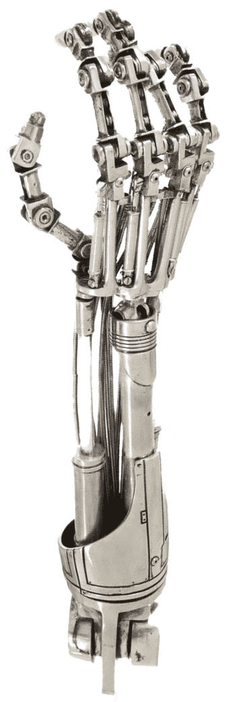

Rust: Hands-On
The Basics
 A super-partial and brief recap of what we saw in the last chapter.
A super-partial and brief recap of what we saw in the last chapter.
Operators
Rust operators are listed here from highest to lowest precedence. Higher precedence operators bind more tightly (are evaluated first).
| Precedence | Operator | Description | Example |
|---|---|---|---|
| Highest | |||
| 1 | :: |
Path separator (namespace) | std::io::Read, Vec::<i32>::new() |
| 2 | . |
Method call or field access | obj.method(), point.x |
| 2 | [] |
Array/slice indexing | arr[0], vec[i] |
| 2 | () |
Function call | foo(), add(1, 2) |
| 2 | ? |
Error propagation | file.read()? (early return on Err) |
| 3 | -expr |
Negation (arithmetic) | -5, -x |
| 3 | !expr |
Logical/bitwise NOT | !true, !0b1010 |
| 3 | *expr |
Dereference | *ptr, *boxed_value |
| 3 | &expr |
Borrow (immutable reference) | &x, &y |
| 3 | &mut expr |
Mutable borrow | &mut y, &mut vec |
| 4 | as |
Type cast | x as f64, 5 as u8 |
| 5 | * |
Multiplication | 3 * 4 |
| 5 | / |
Division | 10 / 2 |
| 5 | % |
Remainder (modulo) | 10 % 3 |
| 6 | + |
Addition | 1 + 2 |
| 6 | - |
Subtraction | 5 - 3 |
| 7 | << |
Left shift | 1 << 3 (8) |
| 7 | >> |
Right shift | 8 >> 2 (2) |
| 8 | & |
Bitwise AND | 0b1100 & 0b1010 |
| 9 | ^ |
Bitwise XOR | 0b1100 ^ 0b1010 |
| 10 | \| |
Bitwise OR | 0b1100 \| 0b1010 |
| 11 | == |
Equality | x == y |
| 11 | != |
Inequality | x != y |
| 11 | < |
Less than | x < y |
| 11 | > |
Greater than | x > y |
| 11 | <= |
Less than or equal | x <= y |
| 11 | >= |
Greater than or equal | x >= y |
| 12 | && |
Logical AND (short-circuit) | a && b |
| 13 | \|\| |
Logical OR (short-circuit) | a \|\| b |
| 14 | .. |
Range (exclusive end) | 0..10 (0 to 9) |
| 14 | ..= |
Range (inclusive end) | 0..=10 (0 to 10) |
| 15 | = |
Assignment | x = 5 |
| 15 | += |
Add and assign | x += 1 |
| 15 | -= |
Subtract and assign | x -= 1 |
| 15 | *= |
Multiply and assign | x *= 2 |
| 15 | /= |
Divide and assign | x /= 2 |
| 15 | %= |
Remainder and assign | x %= 3 |
| 15 | &= |
Bitwise AND and assign | x &= 0xFF |
| 15 | \|= |
Bitwise OR and assign | x \|= 0x80 |
| 15 | ^= |
Bitwise XOR and assign | x ^= mask |
| 15 | <<= |
Left shift and assign | x <<= 2 |
| 15 | >>= |
Right shift and assign | x >>= 2 |
| Lowest |
Special Operators and Constructs
| Syntax | Description | Example |
|---|---|---|
_ |
Wildcard pattern (match anything) | match x { _ => {} } |
.. |
Pattern: ignore remaining fields | Point { x, .. } |
@ |
Pattern binding | match x { val @ 1..=5 => {} } |
\| |
Pattern alternatives | match x { 1 \| 2 \| 3 => {} } |
::<> |
Turbofish (explicit type parameters) | Vec::<i32>::new(), parse::<i32>() |
Not Operators
These look like operators but are actually conventions or syntax:
| Syntax | What It Is | Example |
|---|---|---|
::new() |
Convention for constructors (associated function) | String::new(), Vec::new() |
? |
Error propagation (actually IS an operator, see above) | file.read()? |
.await |
Async/await syntax (postfix keyword) | future.await |
Operator Overloading
Many operators can be overloaded by implementing traits from std::ops. For example:
use std::ops::Add;
struct Point { x: i32, y: i32 }
impl Add for Point {
type Output = Point;
fn add(self, other: Point) -> Point {
Point {
x: self.x + other.x,
y: self.y + other.y,
}
}
}
let p1 = Point { x: 1, y: 2 };
let p2 = Point { x: 3, y: 4 };
let p3 = p1 + p2; // uses our Add implementationIn the following table we include some of A listers and indicate the operator, the trait (in std::ops) and the method signature. For a complete list, see std::ops.
| Operator | Trait | Method |
|---|---|---|
+ |
Add |
add(self, rhs: Rhs) -> Self |
- |
Sub |
sub(self, rhs: Rhs) -> Self |
* |
Mul |
mul(self, rhs: Rhs) -> Self |
/ |
Div |
div(self, rhs: Rhs) -> Self |
% |
Rem |
rem(self, rhs: Rhs) -> Self |
==, != |
PartialEq |
eq(&self, other: &Rhs) -> bool, ne(&self, other: &Rhs) -> bool |
<, >, <=, >= |
PartialOrd |
partial_cmp(&self, rhs: &Rhs) -> Option<Ordering> |
[] |
Index |
index(&self, index: Idx) -> &Self::Output |
[] (mut) |
IndexMut |
index_mut(&mut self, index: Idx) -> &mut Self::Output |
Types
A scalar type represents a single value.
Scalar Types
Rust has four primary scalar types: integers, floating-point numbers, Booleans, and characters:
let a: i32 = -42; // signed 32-bit integer
let b: u64 = 1_000_000; // unsigned 64-bit (underscores ok in literals)
let c: f64 = 3.14; // 64-bit float
let d: bool = true;
let e: char = 'z'; // Unicode scalar, 4 bytes (not u8!)Integer types: i8, i16, i32, i64, i128, isize and their u counterparts. isize/usize are pointer-sized, like ptrdiff_t/size_t in C.
No implicit numeric conversions. You cast explicitly with as:
let x: i32 = 42;
let y: f64 = x as f64;Tuples
A tuple groups a fixed number of values of different types into a single compound value. Unlike arrays, the elements do not have to share a type.
let point: (f64, f64) = (1.0, 2.5);
let record: (i32, &str, bool) = (42, "alice", true);Accessing elements uses dot notation with a zero-based index. The index must be a literal — you cannot index a tuple with a variable.
let t = (10, "hello", 3.14);
let n = t.0; // 10 — i32
let s = t.1; // "hello" — &str
let f = t.2; // 3.14 — f64Fixed-Length Arrays
Arrays in Rust are fixed-size collections of elements of the same type, allocated on the stack. The syntax is [T; N] where T is the element type and N is the length, which must be known at compile time.
// Array of 5 integers
let arr: [i32; 5] = [1, 2, 3, 4, 5];
// Initialize all elements to the same value
let zeros = [0; 100]; // 100 zeros
let buffer = [0u8; 1024]; // 1024-byte buffer
// Access elements (zero-indexed, bounds-checked at runtime)
let first = arr[0]; // 1
let last = arr[4]; // 5
// Length is part of the type
println!("Length: {}", arr.len()); // 5String Types
String and &str
Rust has two string types. The distinction maps directly onto owned vs. borrowed:
| Type | Owned? | Mutable? | Lives on | Analogy |
|---|---|---|---|---|
String |
Yes | Yes | Heap | std::string in C++ |
&str |
No | No | Anywhere | std::string_view in C++ |
Creating a String
let a = String::from("hello"); // from a literal
let b = "hello".to_string(); // same, alternate spelling
let c = format!("{} {}", a, b); // build from parts — like sprintf
let d = String::new(); // empty, build up with push/push_str
let mut e = String::new();
e.push('!'); // append a char
e.push_str(" world"); // append a &strString literals are &str
let s: &str = "hello"; // stored in the binary, 'static lifetime
let t: &str = &a[0..3]; // slice of an existing StringCommon methods
Most string methods are defined on &str and are therefore available on both String and &str. Methods that produce a new owned string return String; methods that just inspect or slice return &str or a primitive.
| Method | Returns | What it does |
|---|---|---|
.len() |
usize |
Byte length which is not the same as character count |
.is_empty() |
bool |
True if length = zero bytes |
.contains(pat) |
bool |
True if pattern is present |
.starts_with(pat) |
bool |
Prefix check |
.ends_with(pat) |
bool |
Suffix check |
.find(pat) |
Option<usize> |
Byte offset of first match |
.trim() |
&str |
Strip leading and trailing whitespace |
.to_lowercase() |
String |
New lowercased string |
.to_uppercase() |
String |
New uppercased string |
.replace(from, to) |
String |
Replace all occurrences |
.split(pat) |
iterator | Split on pattern |
.split_whitespace() |
iterator | Split on any whitespace, skipping empties |
.lines() |
iterator | Split on line endings |
.chars() |
iterator | Unicode scalar values (not bytes) |
.repeat(n) |
String |
Concatenate n copies |
Slices
A view into a sequence, without copying
A slice is a reference to a contiguous subsequence of an array or string. It is a fat pointer: two (machine) words wide, carrying both a pointer to the first element and a length. No heap allocation, no copy. Follows is a table of slice syntax and what it means:
| Syntax | Meaning |
|---|---|
[..] |
Entire sequence |
[a..b] |
From index a up to (not including) b |
[a..=b] |
From index a through b (inclusive) |
[a..] |
From index a to the end |
[..b] |
From the start up to (not including) b |
Reference elements:
| Type | Meaning |
|---|---|
&[T] |
Shared slice of any array or Vec<T> |
&str |
String slice (a view into UTF-8 text) |
These are the idiomatic types for function parameters that only need to read a sequence. A function accepting &[i32] works with arrays, Vec<i32>, and slices of either. A function accepting &str works with String, string literals, and string slices.
Option<T>
I use this guy frequently, and I frequently forget how to use him.
I described Option<T> as a pointer and AI got defensive. He’s right, it’s more than just a pointer. It’s an impenetrable fortress built up around a pointer. In the late 90s, just when Java was becoming popular and .NET was a twinkle in Microsoft’s eye, a commonly quoted statistic was floating around, “90% of C/C++ bugs have to do with memory management”. I don’t know how accurate it is, but having been a C/C++ developer for many years at the time, I have no doubt that memory management is the primary culprit of all C/C++ bugs.
So what is it about Rust that makes him different? Rust does not have nulls. It has None but no NULL. And he has a wicked enum - Option<T> - that can encode the concept of a value being present or absent. Option<T> is defined by the standard library as follows:
enum Option<T> {
None,
Some(T),
}Because Option<T> is an enum, you can never accidentally use a value that might be absent — the compiler forces you to deal with both variants. There is no null, no undefined, no surprise crash at runtime from a missing value.
- Safety Over Pointers:
Option<T>is anenumused to force safe handling of empty cases, unlike raw pointers in other languages. - Pointer Optimization: For types that cannot be
null(like references&TorBox<T>), Rust optimizesOption<T>to eliminate the tag overhead. Thus,Option<&T>is just a pointer, where0x0isNone. - Memory Layout:
Option<&T>is often pointer-sized, but for otherTthe representation is an implementation detail. Conceptually, Rust may need extra state to distinguishSome(T)fromNone, though the exact layout and size depend on the type and any compiler optimizations. - Optional Boxed Value:
Option<Box<T>>represents a pointer to a heap-allocatedTthat might be absent, often used for recursive data structures.
Getting the Value Out
The central question with Option<T> is always: how do I get it out of there? It all depends on what your ambition is and to what length of out you want to go. In the following sections we identify the most frequently used methods and impl functions for performing just about anything you might want to do with a pointer.
match
handle both cases explicitly
The most explicit approach. Use it when the None case needs real logic, not just a default value. It’s also a sweet (🧁) way of doing type conversion.
let name: Option<&str> = Some("Alice");
match name {
Some(n) => println!("Hello, {}!", n),
None => println!("No name provided"),
}For the longest while I thought => was anonymous function syntax, and I couldn’t understand why return caused the outer function to exit. Such as in the following:

fn embassy(config: &Config, lang_key: &str) -> Option<&String> {
let translator = match config.delegate.get(lang_key) {
Some(cmd) => cmd,
None => {
diag::warning(&format!(
"delegate: didn't find translator for '{}'", lang_key
));
return None;
}
};
Some(translator)
}“Why does return None exit fn embassy()?”
Well, silly me, it’s just an arm boundary for match. It’s not a function: it’s a syntactical way of creating an arm.
if let
handle only Some, ignore None
Use when you only care about the success case and want to silently skip None.
if let Some(n) = name {
println!("Hello, {}!", n);
}
// None is silently ignoredYou can go the other direction and act only on None:
if let None = name {
println!("Name is missing");
}Though .is_none() is more idiomatic for that:
if name.is_none() {
println!("Name is missing");
}or
one or the other
or: returns self if it is Some. Otherwise, returns other. Useful for providing a fallback Option.
let x = Some(2);
let y = None;
assert_eq!(x.or(y), Some(2));
let x = None;
let y = Some(100);
assert_eq!(x.or(y), Some(100));or_else
less expensive or
or_else: similar to or, but the fallback Option is computed by a closure f only if self is None. Useful for expensive fallback computations.
fn nobody() -> Option<&'static str> { None }
fn vikings() -> Option<&'static str> { Some("vikings") }
assert_eq!(Some("barbarians").or_else(vikings), Some("barbarians"));
assert_eq!(None.or_else(vikings), Some("vikings"));
assert_eq!(None.or_else(nobody), None);unwrap_or
provide a fallback value
unwrap_or: returns the contained Some value, or a provided default value if self is None. Use when None should produce a sensible default and the default is cheap.
let name = user_name.unwrap_or("Guest");
let count = get_count().unwrap_or(0);unwrap_or_else
compute a fallback lazily
unwrap_or_else: returns the contained Some value, or computes it from a closure f if self is None. Useful when the default value is expensive to compute. Use when the fallback is expensive or requires logic — the closure only runs if the value is None.
let name = user_name.unwrap_or_else(|| fetch_default_name());unwrap and expect
crash on None
Use in tests, prototypes, or when you are certain the value is present and want to document that certainty. expect is preferred because the message appears in the panic output.
let name = user_name.unwrap(); // panics: "called unwrap on None"
let name = user_name.expect("name must be set"); // panics: "name must be set"Never use these in production paths where None is legitimately possible.
?
propagate None up the call stack
Inside a function that returns Option<T>, the ? operator returns None immediately if the value is None, otherwise unwraps and continues. The same operator you use with Result.
fn first_word(text: &str) -> Option<&str> {
let words: Vec<&str> = text.split_whitespace().collect();
let word = words.first()?; // returns None if text is empty
Some(word)
}Testing Without Extracting
Sometimes you just need to know whether a value is present, without extracting it:
- is_some: returns
trueif theOptionisSome,falseotherwise. - is_none: returns
trueif theOptionisNone,falseotherwise.
let val: Option<i32> = Some(42);
val.is_some(); // true
val.is_none(); // falseTransforming Without Extracting
These methods let you work with the value inside an Option without pulling it out first. They all preserve the Option wrapper — None passes through unchanged.
.map(f)
transform the inner value
map: transforms the Some value into a new Option containing the result of applying a function f. If self is None, it remains None.
let length: Option<usize> = name.map(|n| n.len());
// Some("Alice") → Some(5)
// None → None.and_then(f)
chain operations that return Option
and_then: chains operations that themselves return an Option. If self is Some(v), applies f to v and returns the resulting Option. If self is None, returns None. Prevents Option<Option<T>> (nesting).
Use when the transformation itself might fail (returns Option). Prevents Option<Option<T>> nesting.
fn parse_number(s: &str) -> Option<i32> {
s.parse().ok()
}
let result = Some("42").and_then(parse_number); // Some(42)
let result = Some("abc").and_then(parse_number); // None
let result = None.and_then(parse_number); // None.filter(predicate)
keep Some only if condition holds
filter: returns None if the option is None, otherwise calls predicate with the wrapped value and returns Some(t) if predicate returns true and None if predicate returns false.
let age: Option<u32> = Some(15);
let adult = age.filter(|&a| a >= 18); // None — 15 fails the predicate.ok_or(err)
convert Option to Result
ok_or: converts Option<T> into a Result<T, E>. If self is Some(v), returns Ok(v). If self is None, returns Err(err). When you need to treat None as an error:
let val: Result<i32, &str> = Some(42).ok_or("missing value"); // Ok(42)
let val: Result<i32, &str> = None.ok_or("missing value"); // Err("missing value")Dereferencing and as_deref()
This is the Option equivalent of C’s * operator, and the source of some of the most confusing compiler errors you will encounter early on.
The problem: Option<String> vs Option<&str>
When you have an owned Option<String> and try to match against a string literal, the compiler rejects it — "Alice" is &str and the variant holds a String, which are different types:
let name: Option<String> = Some(String::from("Alice"));
match name {
Some("Alice") => println!("hi Alice"), // compile error: expected String, found &str
_ => {}
}.as_deref() converts Option<String> to Option<&str> by borrowing the inner value. No allocation, no copy — just a reference into the existing data:
match name.as_deref() {
Some("Alice") => println!("hi Alice"), // works — comparing &str to &str
Some(n) => println!("hi {}", n),
None => println!("nobody home"),
}
// name is still owned and usable hereThis comes up constantly when passing an Option<String> field to a function that expects Option<&str>:
fn greet(name: Option<&str>) {
println!("Hello, {}!", name.unwrap_or("stranger"));
}
let name: Option<String> = Some(String::from("Alice"));
greet(name.as_deref()); // Option<String> → Option<&str>Pattern dereferencing with &
When you pattern match on an Option<&T>, you can dereference inside the pattern itself using & to strip the reference layer and get the value directly:
let nums = vec![1, 2, 3];
let first: Option<&i32> = nums.first(); // yields Option<&i32>
if let Some(&n) = first { // & in the pattern dereferences — n is i32, not &i32
println!("{}", n);
}The & in Some(&n) is not taking a reference — it is matching a reference and binding the dereferenced value to n. The same way you write &x on the left side of a let in C to mean “x is the thing at this address.”
.as_deref_mut() is the mutable version — converts Option<String> to Option<&mut str> for in-place mutation:
let mut label: Option<String> = Some(String::from("hello"));
if let Some(s) = label.as_deref_mut() {
s.make_ascii_uppercase();
}
println!("{:?}", label); // Some("HELLO")Quick Reference
| Goal | Pattern |
|---|---|
| Handle both cases | match opt { Some(v) => ..., None => ... } |
Act only on Some |
if let Some(v) = opt { ... } |
| Default value | opt.unwrap_or(default) |
| Computed default | opt.unwrap_or_else(\|\| expr) |
Crash if None (dev/test) |
opt.expect("msg") |
Propagate None upward |
opt? |
| Check presence | opt.is_some() / opt.is_none() |
| Transform inner value | opt.map(\|v\| ...) |
| Chain fallible operations | opt.and_then(\|v\| ...) |
| Conditional keep | opt.filter(\|v\| ...) |
Convert to Result |
opt.ok_or(err) |
Option<String> → Option<&str> |
opt.as_deref() |
| Mutably borrow inner string | opt.as_deref_mut() |
Macros
Throughout this chapter you have seen println!, vec!, format!, and panic!. The ! signals a macro call, not a function call. Macros in Rust are code that writes code at compile time, before the compiler type-checks anything.
Why do macros exist? Because they can do things ordinary functions cannot. For example, println! accepts a variable number of arguments of different types — impossible for a regular Rust function without significant compromise. Macros solve this by expanding at compile time into whatever code is needed.
println!("hello"); // no arguments
println!("{}", x); // one argument
println!("{} and {}", x, y); // two arguments, different types fineTypes of Macros
Rust has two macro systems, and within the procedural system there are three distinct subtypes — five kinds in total.
Declarative Macros
macro_rules!
The original macro system. You define patterns that match against syntax and specify what code to expand into. The ! suffix is the giveaway.
macro_rules! say_hello {
() => {
println!("Hello!");
};
($name:expr) => {
println!("Hello, {}!", $name);
};
}
say_hello!(); // Hello!
say_hello!("Alice"); // Hello, Alice!All the macros in the common reference table below (vec!, println!, assert!, etc.) are declarative macros defined with macro_rules! in the standard library. They are the right tool for variadic patterns and syntactic shorthand.
Procedural Macros
Procedural macros are Rust functions that receive a stream of tokens and return a transformed stream of tokens. They live in their own crate (a library crate with proc-macro = true in Cargo.toml) and run at compile time. There are three subtypes:
Derive macros — the most common. Placed with #[derive(...)], they generate trait implementations for a struct or enum. You cannot write a derive macro inline; it must come from a crate.
#[derive(Debug, Clone, PartialEq)]
struct Point { x: f64, y: f64 }
// The derive macro generates impl Debug, impl Clone, impl PartialEq for PointStandard library derive macros: Debug, Clone, Copy, PartialEq, Eq, PartialOrd, Ord, Hash, Default. Third-party crates add more — serde’s Serialize/Deserialize and clap’s Parser are two you will encounter constantly.
Attribute macros — placed before an item with #[...], they can transform the item itself, not just add implementations alongside it. They are more powerful than derive macros because they can rewrite the annotated code entirely.
#[tokio::main] // transforms main() into an async runtime entry point
async fn main() {
// ...
}
#[test] // marks a function as a test case for cargo test
fn it_works() {
assert_eq!(2 + 2, 4);
}
#[cfg(debug_assertions)] // conditionally includes the next item in the build
fn debug_only_check() { }#[cfg(...)] and #[derive(...)] are both attribute syntax, but derive is its own subtype. Everything else with #[...] that isn’t derive is an attribute macro.
Function-like macros — look like declarative macros (called with !) but are implemented as procedural code. Used when the pattern-matching of macro_rules! is not expressive enough. The sql! macro from the sqlx crate is a well-known example: it parses and validates a SQL query string against your actual database schema at compile time, turning a runtime error into a compile error.
let query = sql!(SELECT * FROM users WHERE id = 1);
// sql! can parse and validate the SQL at compile timeYou are unlikely to write function-like macros early on, but you will use them from crates.
Summary
| Type | Syntax | Defined with | Common examples |
|---|---|---|---|
| Declarative | name!(...) |
macro_rules! |
vec!, println!, assert! |
| Derive | #[derive(Name)] |
procedural crate | Debug, Clone, Parser |
| Attribute | #[name] or #[name(...)] |
procedural crate | #[test], #[cfg(...)], #[tokio::main] |
| Function-like (procedural) | name!(...) |
procedural crate | sql!::query!, html! |
Conditional Compilation
Runner up title was “debugging”
If you’ve been a C developer, then you are very familiar with conditional compilation. The same capability exists in Rust. And there are lots of ways of going about it. We are just going to look at the built-in attribute #[cfg(debug_assertions)] and its inverse #[cfg(not(debug_assertions))].
#[cfg(debug_assertions)] is a built-in attribute evaluated by the compiler, and it can be applied to any item: structs, enums, functions, impl blocks, use statements, modules, individual statements. If the condition is false, the item is completely absent from the compiled output — the compiler never sees it, as if you never wrote it. So in the following:
#[cfg(debug_assertions)]
struct DebugStats {
call_count: u32,
last_error: String,
}means DebugStats does not exist in a release build. Any code that references it would also need to be gated the same way, or you’ll get a compile error in release because the type is unknown.
#[cfg(...)] only applies to the single item immediately following it. For example, in the following:
#[cfg(not(debug_assertions))]
cmd.stdout(Stdio::null());
cmd.stderr(Stdio::null());cmd.stdout(Stdio::null()) is conditionally compiled, but cmd.stderr(Stdio::null()) is always compiled regardless of the cfg condition. If you want both lines conditional, you have two options:
- Repeat the attribute:
#[cfg(not(debug_assertions))]
cmd.stdout(Stdio::null());
#[cfg(not(debug_assertions))]
cmd.stderr(Stdio::null());- Wrap in a block:
#[cfg(not(debug_assertions))]
{
cmd.stdout(Stdio::null());
cmd.stderr(Stdio::null());
}Common Macros
Common macros you will use regularly:
| Macro | Purpose |
|---|---|
println!(...) |
Print to stdout with newline |
eprint!(...) |
Print to stderr |
eprintln!(...) |
Print to stderr with newline |
format!(...) |
Build a String using the same syntax as println! |
vec![...] |
Create a Vec<T> from a list of values |
panic!(...) |
Terminate the program with an error message |
assert!(cond) |
Panic if a condition is false |
assert_eq!(a, b) |
Panic if two values are not equal (prints both on failure) |
todo!() |
Placeholder that compiles but panics at runtime |
dbg!(expr) |
Print the file, line, and value of an expression; returns the value |
#[derive(...)] is a different kind of macro — a procedural macro — that generates trait implementations automatically:
#[derive(Debug, Clone, PartialEq)]
struct Point { x: f64, y: f64 }
// Now you can:
println!("{:?}", p); // Debug formatting
let p2 = p.clone(); // Clone
assert_eq!(p, p2); // PartialEqHomemade Macros
Declarative Macros with macro_rules!
Declarative macros are the practical everyday kind. You define one or more pattern arms — each arm matches a particular shape of input and expands to corresponding output code. The syntax looks like match, but the patterns match syntax tokens, not values.
macro_rules! greet {
() => {
println!("Hello, world!");
};
($name:expr) => {
println!("Hello, {}!", $name);
};
}
greet!(); // Hello, world!
greet!("Alice"); // Hello, Alice!Each arm is (pattern) => { expansion };. The $name:expr syntax means “capture whatever expression the caller provides and bind it to the name $name”. Inside the expansion, $name is substituted with that captured value.
Fragment specifiers
The :expr part is a fragment specifier — it tells the macro what kind of syntax to expect. Common ones:
| Specifier | Matches |
|---|---|
expr |
Any expression (1 + 2, foo(), "hello") |
ident |
An identifier (variable name, function name) |
ty |
A type (i32, Vec<String>) |
stmt |
A statement |
block |
A { ... } block |
tt |
A single token tree — the most permissive, matches almost anything |
Repetition
Macros can match and repeat over a variable number of arguments using $(...)* (zero or more) or $(...)+ (one or more):
macro_rules! sum {
($($x:expr),+) => {
{
let mut total = 0;
$(total += $x;)+
total
}
};
}
let result = sum!(1, 2, 3, 4, 5); // 15The $($x:expr),+ pattern means “one or more expressions separated by commas.” In the expansion, $(total += $x;)+ repeats that statement once for each captured $x.
This is how vec![1, 2, 3] works internally — it matches a comma-separated list and expands to a series of .push() calls.
A practical example
a custom assert macro
macro_rules! assert_between {
($val:expr, $low:expr, $high:expr) => {
if $val < $low || $val > $high {
panic!(
"assertion failed: {} not in range [{}, {}]",
$val, $low, $high
);
}
};
}
assert_between!(42, 0, 100); // passes
assert_between!(200, 0, 100); // panics with a clear messageWhen to write a declarative macro
Reach for macro_rules! when:
- You need a variadic interface (variable number of arguments of varying types)
- You want syntactic sugar that reduces repetitive boilerplate
- The logic is straightforward pattern-to-expansion with no complex code generation needed
For most programs, macro_rules! is the only macro system you will ever write. The standard library’s vec!, println!, assert_eq!, and friends are all macro_rules! macros.
Procedural Macros
Procedural macros are a different beast. Instead of pattern matching on syntax, you write a Rust function that receives a stream of tokens, manipulates it programmatically, and returns a new token stream. They live in a dedicated crate (a separate library with proc-macro = true in Cargo.toml) and are compiled before the crates that use them.
Writing a procedural macro from scratch involves the proc-macro, syn (for parsing token streams into a syntax tree), and quote (for generating token streams from templates) crates. It is a non-trivial undertaking.
# Cargo.toml for a proc-macro crate
[lib]
proc-macro = true
[dependencies]
syn = { version = "2", features = ["full"] }
quote = "1"
proc-macro2 = "1"A minimal derive macro that implements a Hello trait:
// In your proc-macro crate
use proc_macro::TokenStream;
use quote::quote;
use syn;
#[proc_macro_derive(Hello)]
pub fn hello_derive(input: TokenStream) -> TokenStream {
// Parse the input tokens into a syntax tree
let ast: syn::DeriveInput = syn::parse(input).unwrap();
let name = &ast.ident; // the struct/enum name
// Generate the impl block
let expanded = quote! {
impl Hello for #name {
fn hello() {
println!("Hello from {}!", stringify!(#name));
}
}
};
expanded.into()
}// In a crate that uses the proc-macro crate
use my_macros::Hello;
#[derive(Hello)]
struct World;
World::hello(); // Hello from World!The quote! macro uses #name as an interpolation placeholder — similar to format strings but for code generation.
You will use procedural macros from crates (serde, clap, tokio, axum) far more often than you will write them. Writing your own is an advanced topic worth knowing exists, but not something most Rust programs need. Start with macro_rules! — it covers the majority of cases where a macro genuinely helps.
Rust Macros vs. C Macros
The fundamental difference is that C macros are based on string substitution (text manipulation), while Rust macros are syntax-aware (token manipulation). Somebody deemed Rust macros “hygienic” and C macros “unhygienic” (poor C).
- Hygienic: variables defined inside a macro do not accidentally clash with variables in the surrounding code.
- Unhygienic: variables can unintentionally shadow or overwrite local variables.
Input Handling
- C Macros: Treat inputs as raw text. This can lead to operator precedence bugs (e.g., becoming instead of ) unless you manually add parentheses.
- Rust Macros: Match against specific syntax categories like (expression), (identifier), or . This ensures the input is syntactically valid before expansion.
Types of Macros
- C: Has only one type — the
#definepreprocessor directive. - Rust: Has two systems (declarative and procedural) with four distinct subtypes. See the Types of Macros section above for the full breakdown.
Compilation Stage
C macros are handled by a separate preprocessor before the compiler sees the code. Rust macros are expanded during the early stages of compilation, meaning the compiler “understands” the structure of the expanded code.
Visual Distinction
In Rust, function-like macros are called with a trailing ! (e.g., println!, vec!), making them instantly distinguishable from standard functions for better readability. C macros look identical to function calls.
See Macros in The Rust Programming Language for more information.
Formatting
I am a prehistoric man. I assumed that eprint!, eprintln!, format!, println! would all live together and essentially use the same formatting code. But, if they do, it’s not immediately apparent from looking at the source. Let’s compare format! and println!:
format!’s location: /lib/rustlib/src/rust/library/alloc/src/macros.rs
#[macro_export]
#[stable(feature = "rust1", since = "1.0.0")]
#[allow_internal_unstable(hint_must_use, liballoc_internals)]
#[rustc_diagnostic_item = "format_macro"]
macro_rules! format {
($($arg:tt)*) => {
$crate::__export::must_use({
$crate::fmt::format($crate::__export::format_args!($($arg)*))
})
}
}println’s location: ./lib/rustlib/src/rust/library/std/src/macros.rs
#[macro_export]
#[stable(feature = "rust1", since = "1.0.0")]
#[cfg_attr(not(test), rustc_diagnostic_item = "println_macro")]
#[allow_internal_unstable(print_internals, format_args_nl)]
macro_rules! println {
() => {
$crate::print!("\n")
};
($($arg:tt)*) => {{
$crate::io::_print($crate::format_args_nl!($($arg)*));
}};
}First we notice that they are in entirely different locations. println! is part of the standard library, whereas format! doesn’t appear to be? Strange. And they are calling into two entirely different crates. I hoped to see to what extent they are birds of similar feather, but that’s not happening. Let’s just stick to the format specification and save the rest for when we are smarter.
Positional Parameters
Each formatting argument ({}) is allowed to specify which value argument it’s referencing, and if omitted it is assumed to be “the next argument”. For example, the format string {} {} {} would take three parameters, and they would be formatted in the same order as they’re given. The format string {2} {1} {0}, however, would format arguments in reverse order. It’s rare to see format specifiers with positions in them. And for a good reason which is that they also support names.
Named Parameters
Named parameters neat. They are listed at the end of the argument list with the following syntax: <identifier> '=' <expression>. For example, the following format! expressions all use named arguments:
format!("{argument}", argument = "test"); // => "test"
format!("{name} {}", 1, name = 2); // => "2 1"
format!("{a} {c} {b}", a="a", b='b', c=3); // => "a 3 b"Are you thinking the order is weird? I think so too, but beggars can’t be choosers and named parameters are pretty darn cool.
Formatting Parameters
Finally! Let’s go. Each argument being formatted can be transformed by a number of formatting parameters. The colon : in format syntax divides identifier of the input data and the formatting options, the colon itself does not change anything, only introduces the options.
let a = 5;
let b = &a;
println!("{a:e} {b:p}"); // => 5e0 0x7ffe37b7273cWidth
// All of these print "Hello x !"
println!("Hello {:5}!", "x");
println!("Hello {:1$}!", "x", 5);
println!("Hello {1:0$}!", 5, "x");
println!("Hello {:width$}!", "x", width = 5);
let width = 5;
println!("Hello {:width$}!", "x");The width in the above specifies the “minimum width” that the format should take up. If the value’s string does not fill up this many characters, then the padding specified by fill/alignment will be used to take up the required space.
The width can also be provided dynamically by referencing another argument with a $ suffix. Use {:N\\$} to reference the \(N^{th}\) positional argument (where \(N\) is an integer), or {:name$} to reference a named argument. The referenced argument must be of type usize.
Referring to an argument with the dollar syntax does not affect the “next argument” counter, so it’s usually a good idea to refer to arguments by position, or use named arguments.
Fill/Alignment
assert_eq!(format!("Hello {:<5}!", "x"), "Hello x !");
assert_eq!(format!("Hello {:-<5}!", "x"), "Hello x----!");
assert_eq!(format!("Hello {:^5}!", "x"), "Hello x !");
assert_eq!(format!("Hello {:>5}!", "x"), "Hello x!");The optional fill character and alignment is provided normally in conjunction with the width parameter. It must be defined before width, right after the :. This indicates that if the value being formatted is smaller than width some extra characters will be printed around it. Filling comes in the following variants for different alignments:
[fill]<- the argument is left-aligned in width columns[fill]^- the argument is center-aligned in width columns[fill]>- the argument is right-aligned in width columns
The default fill/alignment for non-numerics is a space and left-aligned. The default for numeric formatters is also a space character but with right-alignment. If the 0 flag (see below) is specified for numerics, then the implicit fill character is 0.
Note that alignment might not be implemented by some types. In particular, it is not generally implemented for the Debug trait. A good way to ensure padding is applied is to format your input, then pad this resulting string to obtain your output:
println!("Hello {:^15}!", format!("{:?}", Some("hi"))); // => "Hello Some("hi") !"Sign/#/0
assert_eq!(format!("Hello {:+}!", 5), "Hello +5!");
assert_eq!(format!("{:#x}!", 27), "0x1b!");
assert_eq!(format!("Hello {:05}!", 5), "Hello 00005!");
assert_eq!(format!("Hello {:05}!", -5), "Hello -0005!");
assert_eq!(format!("{:#010x}!", 27), "0x0000001b!");These are all flags altering the behavior of the formatter.
+: This is intended for numeric types and indicates that the sign should always be printed. By default only the negative sign of signed values is printed, and the sign of positive or unsigned values is omitted. This flag indicates that the correct sign (+ or -) should always be printed.-: Currently not used#: This flag indicates that the “alternate” form of printing should be used. The alternate forms are:#?: pretty-print the Debug formatting (adds linebreaks and indentation)#x: precedes the argument with a0x#X: precedes the argument with a0x#b: precedes the argument with a0b#o: precedes the argument with a0o
See Formatting traits for a description of what the
?,x,X,b, andoflags do.0- This is used to indicate for integer formats that the padding to width should both be done with a 0 character as well as be sign-aware. A format like{:08}would yield00000001for the integer1, while the same format would yield-0000001for the integer-1. Notice that the negative version has one fewer zero than the positive version. Note that padding zeros are always placed after the sign (if any) and before the digits. When used together with the#flag, a similar rule applies: padding zeros are inserted after the prefix but before the digits. The prefix is included in the total width. This flag overrides the fill character and alignment flag.
Precision
For non-numeric types, this can be considered a “maximum width”. If the resulting string is longer than this width, then it is truncated down to this many characters and that truncated value is emitted with proper fill, alignment and width if those parameters are set.
For integral types, this is ignored. For floating-point types, this indicates how many digits after the decimal point should be printed.
There are three possible ways to specify the desired precision:
- An integer
.N: the integerNitself is the precision. - An integer or name followed by dollar sign
.N$: use the value of format argumentN(which must be a usize) as the precision. An integer refers to a positional argument, and a name refers to a named argument. - An asterisk
.*:.*means that this{...}is associated with two format inputs rather than one:- If a format string in the fashion of
{:<spec>.*}is used, then the first input holds the usize precision, and the second holds the value to print. - If a format string in the fashion of
{<arg>:<spec>.*}is used, then the<arg>part refers to the value to print, and the precision is taken like it was specified with an omitted positional parameter ({}instead of{<arg>:}).
- If a format string in the fashion of
For example, the following calls all print the same thing Hello x is 0.01000:
// Hello {arg 0 ("x")} is {arg 1 (0.01) with precision specified inline (5)}
println!("Hello {0} is {1:.5}", "x", 0.01);
// Hello {arg 1 ("x")} is {arg 2 (0.01) with precision specified in arg 0 (5)}
println!("Hello {1} is {2:.0$}", 5, "x", 0.01);
// Hello {arg 0 ("x")} is {arg 2 (0.01) with precision specified in arg 1 (5)}
println!("Hello {0} is {2:.1$}", "x", 5, 0.01);
// Hello {next arg -> arg 0 ("x")} is {second of next two args -> arg 2 (0.01) with
// precision specified in first of next two args -> arg 1 (5)}
println!("Hello {} is {:.*}", "x", 5, 0.01);
// Hello {arg 1 ("x")} is {arg 2 (0.01) with precision specified in next arg -> arg 0 (5)}
println!("Hello {1} is {2:.*}", 5, "x", 0.01);
// Hello {next arg -> arg 0 ("x")} is {arg 2 (0.01) with precision specified in next arg -> arg 1 (5)}
println!("Hello {} is {2:.*}", "x", 5, 0.01);
// Hello {next arg -> arg 0 ("x")} is {arg "number" (0.01) with precision specified in arg "prec" (5)}
println!("Hello {} is {number:.prec$}", "x", prec = 5, number = 0.01);While these:
println!("{}, `{name:.*}` has 3 fractional digits", "Hello", 3, name=1234.56);
println!("{}, `{name:.*}` has 3 characters", "Hello", 3, name="1234.56");
println!("{}, `{name:>8.*}` has 3 right-aligned characters", "Hello", 3, name="1234.56");print three significantly different things:
Hello, 1234.560 has 3 fractional digits
Hello, 123 has 3 characters
Hello, 123 has 3 right-aligned characters
When truncating these values, Rust uses round half-to-even, which is the default rounding mode in IEEE 754. For example,
print!("{0:.1$e}", 12345, 3);
print!("{0:.1$e}", 12355, 3);Would return:
1.234e4
1.236e4
For more information, see Module fmt.
Memory Management
This is the heart of Rust. If you understand this section, you understand Rust.
The Stack and the Heap
Same as C/C++:
- Stack — fixed-size values, automatically allocated and freed. Fast.
- Heap — dynamic allocation, lives until explicitly freed. Flexible.
In C you manage the heap manually. In Rust the compiler does it for you via ownership rules, at zero runtime cost.
Ownership
Every value in Rust has exactly one owner. When the owner goes out of scope, the value is freed. This is RAII (Resource Acquisition Is Initialization), but enforced by the type system rather than by convention.
{
let s = String::from("hello"); // s owns the heap-allocated string
// use s...
} // s goes out of scope: memory freed automatically. No free(), no delete.When s goes out of scope, Rust automatically runs String’s implementation of the Drop trait. This drop logic is generated and invoked by the compiler at the end of the scope; it releases the resources owned by s, typically by returning its heap memory to the allocator. Conceptually, Drop plays the same role as a C++ destructor: it is guaranteed to run exactly once when the value’s lifetime ends, and user code cannot forget to call it or call it twice.
Move semantics — when you assign an owned value to another variable, the original owner is invalidated. This prevents double-free:
let s1 = String::from("hello");
let s2 = s1; // ownership moves to s2
// println!("{}", s1); // compile error: s1 no longer valid
println!("{}", s2); // fineThis is like C++ move semantics, but the compiler forces you to use them correctly. You can’t accidentally use a moved-from value.
Copy types — primitives like integers implement the Copy trait, so assignment copies the value rather than moving it (same as C):
let x = 5;
let y = x; // x is copied, not moved
println!("{}", x); // fine: x still validBorrowing
Moving ownership around constantly would be tedious. Borrowing lets you pass references to data without transferring ownership. Like pointers, but guaranteed safe.
fn print_len(s: &String) { // borrows s, doesn't take ownership
println!("{}", s.len());
}
let s = String::from("hello");
print_len(&s); // lend s to the function
println!("{}", s); // s still valid after the callThe Rules
Enforced at compile time
- You can have either one mutable reference or any number of immutable references — never both at the same time. The following spells it out:
- We can create a single mutable reference to it:
let s = String::from("🙂"); let rm1 = &mut s. - We cannot create two mutable references to it:
let s = String::from("😡"); let rm1 = &mut s; let rm2 = &mut s;❌. Will fail with compilation error. - We cannot create a single mutable reference and an immutable reference:
let s = String::from("😡"); let rm1 = &mut s; let ri1 = &mut s;❌. Will fail with compilation error. - We can create one or more immutable references:
let s = String::from("🙂"); let ri1 = &s; let ri2 = &s; let ri3 = &s; - Note: reference tracking transcends function boundaries; meaning, it doesn’t matter that two references exist to the same object in different functions. It’s still two references to the same object.
- We can create a single mutable reference to it:
- References must always be valid (no dangling references).
let mut s = String::from("hello");
let r1 = &s; // immutable borrow
let r2 = &s; // another immutable borrow — fine
// let r3 = &mut s; // compile error: can't borrow as mutable while immutable borrows exist
println!("{} {}", r1, r2);
// r1 and r2 are last used here — compiler ends their borrows (see callout below)
let r3 = &mut s; // now a mutable borrow is fine
r3.push_str(", world");This feels restrictive at first. In practice it eliminates a huge class of bugs: data races, iterator invalidation, use-after-free. The compiler is your enforcer.
If the example above seems surprising — how can r3 be valid when r1 and r2 were never explicitly dropped? — the answer is Non-Lexical Lifetimes, introduced in Rust 2018.
Before NLL, the compiler tied a borrow’s lifetime to its enclosing block ({}). That meant r1 and r2 would stay alive until the } closing whatever scope they were declared in, making r3 = &mut s a compile error even though r1 and r2 are never touched again after the println!. This was a real source of frustration.
With NLL, the compiler performs a dataflow analysis to find the last point where each reference is actually used. A borrow ends there, not at the end of the block. After the println!, r1 and r2 are genuinely dead as far as the compiler is concerned. By the time r3 is created, no immutable borrows are active, so the mutable borrow is legal.
The practical upshot: you rarely need to introduce extra scopes ({ }) just to end a borrow early. The compiler figures it out from how you actually use the references.
If you think about how the stack works, this becomes intuitive. When a function runs, local variables are pushed onto the stack frame. A variable is “live” as long as some future instruction needs its value. Once no instruction downstream references it, it is effectively dead — even if the stack frame hasn’t been torn down yet. NLL applies exactly that reasoning to borrows: the compiler walks forward through the code and asks “does anything after this point use r1?” If not, the borrow is over. The } is just the latest possible point a borrow can end, not the only one.
Lifetimes
Ensuring references don’t outlive their data
Lifetimes are Rust’s way of ensuring references are always valid — that they don’t outlive the data they point to. In most code the compiler infers them. You only write lifetime annotations when the compiler can’t figure out the relationship between input and output references.
The lifetime syntax looks unusual at first (it is the 'a in &'a str), but it’s just a way to name the scope during which a reference must remain valid.
Quick Reference
// Setup for examples below
fn longest<'a>(x: &'a str, y: &'a str) -> &'a str {
if x.len() > y.len() { x } else { y }
}
struct Important<'a> { content: &'a str }| Syntax | Meaning | Example |
|---|---|---|
'a |
A lifetime parameter named 'a |
fn f<'a>(...) |
&'a T |
Reference to T that lives at least 'a |
fn f<'a>(x: &'a str) -> &'a str |
&'a mut T |
Mutable reference to T that lives at least 'a |
fn fill<'a>(buf: &'a mut Vec<u8>) |
<'a, 'b> |
Function/struct has two independent lifetimes | fn f<'a, 'b>(x: &'a str, y: &'b str) -> &'a str |
'b: 'a |
Lifetime 'b outlives lifetime 'a |
fn f<'a, 'b: 'a>(x: &'a str, y: &'b str) -> &'a str |
T: 'a |
All references in T must outlive 'a |
fn print<'a, T: 'a + std::fmt::Debug>(v: &'a T) |
'static |
Lives for the entire program (string literals, leaked values) | let s: &'static str = "hello"; |
'_ |
Anonymous lifetime (placeholder, let compiler infer) | fn first(s: &'_ str) -> &'_ str |
for<'a> |
Higher-rank trait bound — works for any lifetime | where F: for<'a> Fn(&'a str) -> &'a str |
Basic Lifetime Syntax
// Function that returns a reference: which input does it come from?
fn longest<'a>(x: &'a str, y: &'a str) -> &'a str {
if x.len() > y.len() { x } else { y }
}The <'a> declares a lifetime parameter (like a generic type parameter). The &'a str annotations say:
- Both inputs must live at least as long as
'a - The output reference lives at most as long as
'a
This tells the compiler: “The returned reference is valid for as long as both inputs are valid.”
Why it matters
let result;
{
let s1 = String::from("long string");
let s2 = String::from("short");
result = longest(&s1, &s2);
}
println!("{}", result); // compile error: s1 and s2 are out of scopeThe compiler prevents the dangling reference at compile time, not runtime.
Comprehensive Lifetime Syntax Reference
Single lifetime parameter
fn first_word<'a>(s: &'a str) -> &'a str {
s.split_whitespace().next().unwrap_or("")
}Multiple independent lifetimes
fn announce<'a, 'b>(x: &'a str, y: &'b str) -> &'a str {
println!("Announcement: {}", y); // y can have a different lifetime
x // returned reference tied only to x's lifetime
}Lifetime bounds
'b: 'a means 'b outlives 'a**
fn choose<'a, 'b: 'a>(x: &'a str, y: &'b str) -> &'a str {
if x.len() > y.len() { x } else { y }
// y must live at least as long as 'a to be returned
}Structs with lifetimes
struct Excerpt<'a> {
text: &'a str, // this struct holds a reference that lives 'a
}
impl<'a> Excerpt<'a> {
fn announce(&self) -> &str {
self.text // lifetime elided — compiler knows it's 'a
}
}Multiple lifetimes in structs
struct Context<'a, 'b> {
config: &'a str,
buffer: &'b mut [u8],
}Static lifetime
'static lives for entire program
let s: &'static str = "string literal"; // lives in the binary
fn leak_value() -> &'static str {
Box::leak(Box::new(String::from("leaked"))) // deliberately leak to get 'static
}Lifetime elision
When the compiler infers lifetimes
These three rules let you omit lifetime annotations in many cases:
- Each elided input lifetime gets a distinct parameter
- If there’s exactly one input lifetime, it’s assigned to all outputs
- If there’s a
&selfor&mut self, its lifetime is assigned to all outputs
// Written:
fn first(s: &str) -> &str { s }
// Compiler sees:
fn first<'a>(s: &'a str) -> &'a str { s }Trait bounds with lifetimes
fn print_ref<'a, T>(value: &'a T)
where
T: std::fmt::Display + 'a // T must live at least 'a
{
println!("{}", value);
}Higher-Rank Trait Bounds
HRTB: for<'a>
Used when a closure or trait must work for any lifetime:
fn apply<F>(f: F)
where
F: for<'a> Fn(&'a str) -> &'a str // F must work for all lifetimes 'a
{
let s = String::from("test");
println!("{}", f(&s));
}Common Lifetime Patterns
Returning references from methods
impl<'a> MyStruct<'a> {
fn get_field(&self) -> &'a str {
self.field // tied to struct's lifetime, not method's &self
}
}Mutable and immutable references with different lifetimes
fn split_at<'a>(s: &'a mut str, mid: usize) -> (&'a mut str, &'a mut str) {
// ... splits s into two mutable references
}Anonymous lifetime
'_
Explicitly acknowledge a lifetime without naming it:
impl<'a> Excerpt<'a> {
fn level(&self) -> &'_ str { // same as &str here due to elision
self.text
}
}
// Useful in type position to be explicit:
let x: &'_ str = "hello";When You Need Lifetime Annotations
The compiler will tell you. Common situations:
- Function returns a reference and has multiple reference inputs
- Struct holds references — you must name how long those references live
- Impl blocks for structs with lifetimes — repeat the lifetime parameter
- Closures that capture references (usually inferred, but not always)
Don’t worry if this feels overwhelming. In practice:
- The compiler infers lifetimes in most code
- Error messages tell you exactly where annotations are needed
- Most functions only need one lifetime parameter
- You rarely write complex lifetime bounds until you’re building advanced libraries
Start simple, let the compiler guide you, and the syntax will become natural over time.
See Validating References with Lifetimes in The Rust Programming Language for more information.
Structs, Enums, and Traits
Quick Reference
| Goal | Syntax | Location |
|---|---|---|
| Create struct on stack | let s = MyStruct { ... }; |
Stack |
| Create struct on heap | let s = Box::new(MyStruct { ... }); |
Heap |
| Create empty Vec | Vec::new() or Vec::with_capacity(n) |
Heap (for elements) |
| Create populated Vec | vec![1, 2, 3] |
Heap |
| Constructor convention | impl MyStruct { pub fn new() -> Self { ... } } |
N/A |
| Default initialization | impl Default for MyStruct { ... } |
N/A |
Structs
struct Point {
x: f64,
y: f64,
}
impl Point {
// Associated function (like a static method) — constructor by convention
fn new(x: f64, y: f64) -> Self {
Point { x, y } // field shorthand when names match
}
// Method — first arg is &self (immutable) or &mut self (mutable)
fn distance_from_origin(&self) -> f64 {
(self.x * self.x + self.y * self.y).sqrt()
}
}
let p = Point::new(3.0, 4.0);
println!("{}", p.distance_from_origin()); // 5.0No inheritance. Composition over inheritance is idiomatic Rust.
Constructors and Allocation
How structs are created and where they live
Rust doesn’t have constructors in the C++/Java sense. There’s no special new keyword or automatic initialization. Instead, you create structs explicitly, and by convention provide a new() associated function (a static method in C++ terms).
The new() Convention
struct Config {
host: String,
port: u16,
timeout: u32,
}
impl Config {
// By convention, new() creates a new instance
pub fn new(host: String, port: u16) -> Self {
Config {
host,
port,
timeout: 30, // default value
}
}
// Can have multiple constructors with different names
pub fn default_local() -> Self {
Config {
host: String::from("localhost"),
port: 8080,
timeout: 30,
}
}
}
let config = Config::new(String::from("example.com"), 443);new() is not special — it’s just a regular function you write yourself. You can name it anything (create(), make(), build()), but new() is the convention.
The Default Trait
For types with sensible defaults, implement the Default trait:
impl Default for Config {
fn default() -> Self {
Config {
host: String::from("localhost"),
port: 8080,
timeout: 30,
}
}
}
// Now you can use Default::default() or derive it
let config = Config::default();
// Or in generic contexts
let config = <Config>::default();Many types derive Default automatically if all fields implement Default:
#[derive(Default)]
struct Stats {
count: u32, // defaults to 0
total: f64, // defaults to 0.0
enabled: bool, // defaults to false
}Stack vs Heap
Where Does Your Struct Live?
This is crucial and often confusing coming from C/C++:
// Stack-allocated: the struct lives on the stack
let config = Config::new(String::from("example.com"), 443);
// Heap-allocated: the struct lives on the heap (Box is a smart pointer)
let config = Box::new(Config::new(String::from("example.com"), 443));By default, structs are stack-allocated. The struct itself lives on the stack, just like in C:
// C equivalent
Config config = make_config("example.com", 443); // on stackTo heap-allocate the entire struct, use Box::new():
let config = Box::new(Config::default()); // config is a Box<Config> on heapWhat About Fields That Contain Heap Data?
Here’s the key insight that trips up C/C++ programmers:
struct Database {
connections: Vec<Connection>, // Vec is heap-allocated
cache: HashMap<String, Data>, // HashMap is heap-allocated
name: String, // String is heap-allocated
}
// The Database struct itself is on the stack
// But connections, cache, and name manage heap allocations
let db = Database {
connections: Vec::new(), // empty Vec, heap space allocated as needed
cache: HashMap::new(), // empty HashMap, heap space allocated as needed
name: String::from("mydb"), // heap-allocated string data
};The Database struct itself (its stack frame) is small — it contains only the pointers and metadata for Vec, HashMap, and String. The actual data lives on the heap:
Stack: Heap:
┌─────────────┐
│ Database │
│ connections│──────────> [Connection, Connection, ...]
│ cache │──────────> {key→value, key→value, ...}
│ name │──────────> "mydb"
└─────────────┘Vector Allocation in Detail
Since your question was about Vec, here are all the ways to create one:
// Empty vector (no heap allocation until you push)
let mut v: Vec<i32> = Vec::new();
// Pre-allocate capacity (allocates heap space for 100 elements, but length is 0)
let mut v: Vec<i32> = Vec::with_capacity(100);
v.push(1); // doesn't reallocate
// From literal with vec! macro
let v = vec![1, 2, 3, 4, 5];
// From iterator
let v: Vec<i32> = (0..10).collect();
// From existing slice
let arr = [1, 2, 3];
let v = arr.to_vec();
// Clone another vector (new heap allocation)
let v2 = v.clone();Applying This to Your Exs24 Struct
pub struct Exs24 {
chunks: Vec<Chunk>,
headers: Vec<Header>,
instruments: Vec<Instrument>,
samples: Vec<Sample>,
zones: Vec<Zone>,
}
impl Exs24 {
pub fn new() -> Self {
Exs24 {
chunks: Vec::new(), // each Vec::new() creates an empty heap-allocated vector
headers: Vec::new(),
instruments: Vec::new(),
samples: Vec::new(),
zones: Vec::new(),
}
}
// Or with expected capacity if you know sizes
pub fn with_capacity(chunk_count: usize) -> Self {
Exs24 {
chunks: Vec::with_capacity(chunk_count),
headers: Vec::new(),
instruments: Vec::new(),
samples: Vec::new(),
zones: Vec::new(),
}
}
}
// Stack-allocated Exs24, but each Vec manages heap data
let mut exs = Exs24::new();
exs.chunks.push(chunk1); // grows heap allocation as needed
// Heap-allocated Exs24 (if the struct itself is large)
let mut exs = Box::new(Exs24::new());When to Use Box
Heap-Allocate the Struct
Most of the time, stack allocation is fine. Use Box::new() when:
- The struct is very large (megabytes) and might overflow the stack
- You need a stable address that won’t change if you move the struct
- Recursive types (a struct that contains itself) — requires indirection
// Large struct — might want to heap-allocate
struct HugeBuffer {
data: [u8; 1024 * 1024], // 1MB array
}
let buffer = Box::new(HugeBuffer { data: [0; 1024 * 1024] });Value vs Reference Semantics
In C, you choose value or reference explicitly:
Config cfg; // value (on stack)
Config* cfg_ptr; // reference (pointer)In Rust, types control their semantics, but the principle is similar:
let cfg = Config::default(); // value (owned, on stack)
let cfg_ref = &cfg; // reference (borrowed)
let cfg_box = Box::new(cfg); // value (owned, on heap)
let cfg_ref_to_box = &cfg_box; // reference to boxed valueThe key difference: ownership is tracked by the compiler. You can’t have dangling pointers or double-frees.
Enums
From C-style constants to algebraic data types
Enums in Rust serve the same purpose as in C/C++ — defining a type with a fixed set of named variants — but they’re far more powerful. Let’s start with what you know, then expand.
C-Style Enums
Named Constants
Yes, you can use Rust enums exactly like C enums:
// Simple enum, like C
enum Status {
Ready,
Running,
Stopped,
}
let state = Status::Running;
match state {
Status::Ready => println!("ready"),
Status::Running => println!("running"),
Status::Stopped => println!("stopped"),
}Unlike C, you don’t get implicit integer values. Variants are not integers — they’re type-safe values. You can’t compare Status::Ready == 0 unless you explicitly derive traits or assign discriminants.
Explicit discriminants (like C enum values):
enum HttpStatus {
Ok = 200,
NotFound = 404,
InternalError = 500,
}
let code = HttpStatus::NotFound as i32; // 404Use as i32 to get the integer value. The reverse (integer to enum) requires manual implementation or a crate like num_enum.
Rust Enums
Algebraic Data Types
Here’s where Rust diverges from C/C++: each variant can carry data. This makes enums a tagged union — a type that can be one of several variants, each with its own payload.
enum Message {
Quit, // no data
Move { x: i32, y: i32 }, // named fields (like a struct)
Write(String), // single unnamed field
Color(u8, u8, u8), // tuple-like (RGB)
}
let msg = Message::Write(String::from("hello"));
match msg {
Message::Quit => println!("quit"),
Message::Move { x, y } => println!("move to {}, {}", x, y),
Message::Write(text) => println!("write: {}", text),
Message::Color(r, g, b) => println!("color: {}, {}, {}", r, g, b),
}Darn those Rust architects! Why Move { x: i32, y: i32 }? Why not Move(x: i32, y: i32)?
In Rust enums, variants mirror the way types are defined elsewhere in the language. They can only be structured in three specific ways:
- Unit Variants: Contain no data at all (like a traditional C-style enum).
- Tuple Variants: Contain unnamed, ordered fields using parentheses:
Color(u8, u8, u8). - Struct Variants: Contain named fields enclosed in curly braces:
Move { x: i32, y: i32 }.
The syntax Move(x: i32, y: i32) is invalid because it tries to mix two of those styles together. In Rust, parentheses () strictly denote a tuple, and tuple fields are inherently anonymous and accessed by position (5, 4), not by name. The proposed syntax attempts to put named fields inside a tuple wrapper. If you want named fields, you must use curly braces {} to denote a struct payload. But, if you really hate curly braces, you can of course write it with parentheses as a tuple:
Move(i32, i32)Then you are golden, but you lose the explicit clarity of which i32 represents the x-axis and which represents y-axis. So put on your big boy britches and get used to it. There is no way around it.
This is more powerful than C unions because:
- The tag (which variant it is) is stored automatically
- The compiler ensures you can’t access the wrong variant’s data
- Each variant can have completely different types
Real-world example
enum Shape {
Circle(f64), // radius
Rectangle(f64, f64), // width, height
Triangle { base: f64, height: f64 }, // named fields
}
impl Shape {
fn area(&self) -> f64 {
match self {
Shape::Circle(r) => std::f64::consts::PI * r * r,
Shape::Rectangle(w, h) => w * h,
Shape::Triangle { base, height } => 0.5 * base * height,
}
}
}
let circle = Shape::Circle(5.0);
println!("Area: {}", circle.area()); // 78.54Standard Library Enums
Two enums you’ll use constantly:
Option<T>
replaces null pointers
enum Option<T> {
Some(T), // value is present
None, // value is absent
}
let maybe: Option<i32> = Some(42);
let nothing: Option<i32> = None;
// Must handle both cases
match maybe {
Some(n) => println!("got {}", n),
None => println!("nothing"),
}Result<T, E> — replaces error codes and exceptions
enum Result<T, E> {
Ok(T), // success value
Err(E), // error value
}
fn divide(a: i32, b: i32) -> Result<i32, String> {
if b == 0 {
Err(String::from("division by zero"))
} else {
Ok(a / b)
}
}See the Errors as Values section for comprehensive coverage of Result.
Methods on Enums
Enums can have methods, just like structs:
enum TrafficLight {
Red,
Yellow,
Green,
}
impl TrafficLight {
fn duration(&self) -> u32 {
match self {
TrafficLight::Red => 60,
TrafficLight::Yellow => 10,
TrafficLight::Green => 90,
}
}
fn can_go(&self) -> bool {
matches!(self, TrafficLight::Green)
}
}
let light = TrafficLight::Red;
println!("Duration: {}s", light.duration()); // 60sWhy Rust Enums Are Not Quite Generics
You mentioned enums seem like generics — there’s a connection, but they’re different:
- Generics (
Vec<T>,Result<T, E>) are about parameterizing types — the same code works for many types - Enums are about choice — a value is exactly one of several variants
Option<T> and Result<T, E> are enums with generic parameters. The enum defines the structure (Some or None), and the generic T lets you wrap any type:
let num: Option<i32> = Some(42); // Option is the enum, i32 is the generic param
let text: Option<String> = Some(s); // Same enum, different TQuick Comparison
| Feature | C/C++ enum | Rust enum |
|---|---|---|
| Named constants | ✓ | ✓ |
| Implicit integer values | ✓ | ✗ (must use discriminants) |
| Variants carry data | ✗ | ✓ (each variant can hold different types) |
| Type safety | Weak (converts to int) | Strong (cannot misuse variants) |
| Pattern matching required | ✗ | ✓ (compiler enforces exhaustiveness) |
| Methods | ✗ | ✓ |
When to Use Each Style
C-style
no data
- State machines (Ready, Running, Stopped)
- Status codes with explicit discriminants
- Simple categorization
Algebraic data types
with data
- Representing different kinds of data (shapes, messages)
- Optional values (
Option<T>) - Results with success/error variants (
Result<T, E>) - Abstract syntax trees, parsers, state with payloads
See Enums and Pattern Matching in The Rust Programming Language for more information.
Traits
Traits are Rust’s answer to interfaces. A trait defines behavior; structs implement it.
trait Describe {
fn describe(&self) -> String;
}
impl Describe for Point {
fn describe(&self) -> String {
format!("({}, {})", self.x, self.y)
}
}
impl Describe for Shape {
fn describe(&self) -> String {
format!("area = {:.2}", self.area())
}
}
// Accept any type that implements Describe
fn print_description(item: &impl Describe) {
println!("{}", item.describe());
}Common standard library traits you’ll encounter:
Debug— enables{:?}formatting (usually derived)Clone— explicit deep copyCopy— implicit copy on assignment (primitives)Iterator— gives youmap,filter,collect, etc.Display— enables{}formatting
Derive macros implement common traits automatically:
#[derive(Debug, Clone)]
struct Point { x: f64, y: f64 }
// Now you can: println!("{:?}", p);The compiler is capable of providing basic implementations for some traits via the #[derive] attribute. These traits can still be manually implemented if a more complex behavior is required.
The following is a list of traits that may be derived:
Debug: Allows formatting using {:?} for printing.Clone: Enables creating a deep copy of a value (.clone()).Copy: Gives a type “copy semantics” instead of “move semantics”.Default: Creates a default value for a type (Default::default()).PartialEq/Eq: Allows equality comparisons (==).PartialOrd/Ord: Allows ordering comparisons (<, >).Hash: Enables hashing of the type.
#[derive(Debug, Clone, PartialEq)]
struct Point {
x: i32,
y: i32,
}
fn main() {
let p1 = Point { x: 1, y: 2 };
let p2 = p1.clone(); // Enabled by Clone
println!("{:?}", p1); // Enabled by Debug
assert_eq!(p1, p2); // Enabled by PartialEq
}For more information, see Appendix C: Derivable Traits in The Rust Programming Language.
Implementing Display and Debug
Debug and Display are the two formatting traits you will implement most often.
Debug is for developer output — {:?} and {:#?}. It is almost always derived automatically:
#[derive(Debug)]
struct Point {
x: f64,
y: f64,
}
let p = Point { x: 1.0, y: 2.5 };
println!("{:?}", p); // Point { x: 1.0, y: 2.5 }
println!("{:#?}", p); // pretty-printed, indented{:#?} (the “alternate” format) prints with indentation — useful for nested structures.
Display is for user-facing output — {}. It cannot be derived; you implement it manually via std::fmt::Display:
use std::fmt;
struct Point {
x: f64,
y: f64,
}
impl fmt::Display for Point {
fn fmt(&self, f: &mut fmt::Formatter) -> fmt::Result {
write!(f, "({}, {})", self.x, self.y)
}
}
let p = Point { x: 1.0, y: 2.5 };
println!("{}", p); // (1, 2.5)
let s = p.to_string(); // Display also gives you .to_string() for freeThe fmt method writes into a formatter using write! (same syntax as println! but targeting the formatter). Return fmt::Result — either Ok(()) on success or an error if writing failed.
Implementing both is the standard pattern for any type you plan to use in output or error handling. Debug for internal diagnostics, Display for anything a user might see:
use std::fmt;
#[derive(Debug)]
struct Color {
red: u8,
green: u8,
blue: u8,
}
impl fmt::Display for Color {
fn fmt(&self, f: &mut fmt::Formatter) -> fmt::Result {
write!(f, "#{:02X}{:02X}{:02X}", self.red, self.green, self.blue)
}
}
let c = Color { red: 255, green: 128, blue: 0 };
println!("{}", c); // #FF8000 — Display
println!("{:?}", c); // Color { red: 255, green: 128, blue: 0 } — DebugImplementing Display automatically gives your type .to_string() via a blanket impl in the standard library — no extra work required.
| Trait | Format spec | Derived? | Audience | Also provides |
|---|---|---|---|---|
Debug |
{:?} |
Yes | Developer | {:#?} pretty-print |
Display |
{} |
No | User | .to_string() |
See Structs in The Rust Programming Language for more information.
Generics and Trait Bounds
Generics are Rust’s equivalent of C++ templates, but they interact with the trait system in a way that makes constraints explicit and checked at compile time. A generic function works over any type, constrained by trait bounds:
fn largest<T: PartialOrd>(a: T, b: T) -> T {
if a > b { a } else { b }
}
println!("{}", largest(5, 10)); // works with i32
println!("{}", largest(3.0, 2.5)); // works with f64The T: PartialOrd bound says “T must implement PartialOrd” — the trait that provides >, <, and so on. Without the bound, the compiler rejects the use of > on an unconstrained T. Unlike C++ templates, there are no surprise errors at instantiation time; the bounds are checked against the generic definition itself.
Generic structs work the same way:
struct Pair<T> {
first: T,
second: T,
}
impl<T: std::fmt::Display> Pair<T> {
fn show(&self) {
println!("({}, {})", self.first, self.second);
}
}Multiple bounds use +:
fn print_debug<T: Debug + Clone>(item: T) {
let copy = item.clone();
println!("{:?}", copy);
}impl Trait vs dyn Trait
There are two ways to accept a trait in a function signature, and the choice matters for performance.
impl Trait — static dispatch. The compiler generates a separate, specialized function for each concrete type at compile time. No runtime overhead, but the type must be known at compile time.
fn make_sound(animal: &impl Animal) {
animal.speak();
}dyn Trait — dynamic dispatch. A fat pointer containing the data address and a vtable of function pointers, resolved at runtime. Slightly slower, but lets you hold mixed types in a collection or return different concrete types from one function.
fn make_sounds(animals: &[Box<dyn Animal>]) {
for a in animals {
a.speak(); // resolved at runtime via vtable
}
}This is the Rust equivalent of virtual methods in C++. The analogy is direct: Box<dyn Trait> is roughly what a pointer-to-base class with a vtable is in C++. Prefer impl Trait when the type is known at compile time; reach for dyn Trait when you need runtime polymorphism or heterogeneous collections.
See Generic Types, Traits, and Lifetimes in The Rust Programming Language for more information.
Pattern Matching
Pattern matching in Rust is deeper than a switch statement. It simultaneously tests the structure of a value and extracts data from it. Every match arm is a pattern, and the compiler guarantees you have handled every possible case — exhaustiveness is enforced at compile time.
The match Expression
match as per The Rust Programming Language.
let n = 7;
match n {
1 => println!("one"),
2 | 3 => println!("two or three"), // | means "or"
4..=9 => println!("four through nine"), // ..= is an inclusive range
_ => println!("something else"), // _ is a wildcard, matches anything
}match is an expression — it produces a value, and all arms must have the same type:
let label = match n {
1 => "one",
2 | 3 => "two or three",
4..=9 => "single digit",
_ => "large",
};Matching on Option<T>
Option<T> represents a value that may or may not exist. It replaces NULL entirely and forces you to handle the absent case.
let maybe: Option<i32> = Some(42);
match maybe {
Some(n) => println!("got {}", n), // n is bound to 42
None => println!("nothing here"),
}The Some(n) pattern does two things simultaneously: it checks that the value is a Some, and it binds the inner value to n. You cannot access n outside that arm — the compiler will not let you pretend a None is a value.
Compare this to C:
int *p = maybe_get_value();
printf("%d\n", *p); // crashes at runtime if p is NULLIn Rust, not handling None is a compile error, not a runtime discovery.
Patterns compose. Nested Option values can be matched in one expression:
let nested: Option<Option<i32>> = Some(Some(7));
match nested {
Some(Some(n)) => println!("deep value: {}", n),
Some(None) => println!("outer Some, inner None"),
None => println!("outer None"),
}Matching on Result<T, E>
Result<T, E> represents either success (Ok) or failure (Err). It is how Rust returns errors from functions — no exceptions, no out-of-band error codes.
let result: Result<i32, &str> = Ok(100);
match result {
Ok(n) => println!("success: {}", n),
Err(e) => println!("failed: {}", e),
}The error variant can carry any type, and you can match on it just as deeply:
use std::num::ParseIntError;
fn parse_and_double(s: &str) -> Result<i32, ParseIntError> {
let n: i32 = s.trim().parse()?; // ? propagates Err early
Ok(n * 2)
}
match parse_and_double("21") {
Ok(n) => println!("result: {}", n), // prints 42
Err(e) => println!("parse error: {}", e),
}Destructuring Structs and Tuples
Patterns work directly on the structure of any type. You are not comparing fields one at a time — you are writing the shape of the data you expect, and the compiler matches it.
struct Point { x: f64, y: f64 }
let p = Point { x: 3.0, y: -1.0 };
match p {
Point { x: 0.0, y: 0.0 } => println!("at origin"),
Point { x, y: 0.0 } => println!("on x-axis at {}", x),
Point { x: 0.0, y } => println!("on y-axis at {}", y),
Point { x, y } => println!("at ({}, {})", x, y),
}Tuples destructure the same way:
let pair = (true, 42);
match pair {
(true, n) => println!("true with {}", n),
(false, _) => println!("false"),
}Enum variants that carry data are matched by their payload structure:
enum Message {
Quit,
Move { x: i32, y: i32 },
Write(String),
Color(u8, u8, u8),
}
match msg {
Message::Quit => println!("quit"),
Message::Move { x, y } => println!("move to {},{}", x, y),
Message::Write(text) => println!("write: {}", text),
Message::Color(r, g, b) => println!("color: {},{},{}", r, g, b),
}Match Guards
An if condition can be added to any arm. The pattern must match and the guard must be true for the arm to fire:
let n = 7;
match n {
n if n < 0 => println!("negative"),
0 => println!("zero"),
n if n % 2 == 0 => println!("positive even"),
n => println!("positive odd: {}", n),
}Binding with @
The @ operator lets you bind a name to a value while also testing it against a sub-pattern. This is useful when you need to both check a range and use the specific value:
match n {
small @ 1..=9 => println!("{} is a single digit", small),
large => println!("{} is large", large),
}if let and while let
When you only care about one variant, a full match is verbose. if let handles one case and ignores the rest:
let config: Option<&str> = Some("debug");
if let Some(level) = config {
println!("log level: {}", level);
}
// None is silently ignoredwhile let loops until a pattern stops matching — useful for draining a collection:
let mut stack = vec![1, 2, 3];
while let Some(top) = stack.pop() {
println!("{}", top); // prints 3, 2, 1
}let and Function Arguments Are Also Patterns
This surprises people coming from other languages: let itself is a pattern match. Any irrefutable pattern (one that always matches) is valid on the left-hand side of a let:
let (a, b, c) = (1, 2, 3); // tuple destructuring
let Point { x, y } = p; // struct destructuringFunction parameters destructure too:
fn sum_pair(&(a, b): &(i32, i32)) -> i32 {
a + b
}Pattern matching is not a special feature bolted onto Rust — it is woven into the language as the primary way to inspect and extract data.
Exhaustiveness
The compiler rejects a match that does not cover all cases:
enum Direction { North, South, East, West }
let dir = Direction::North;
match dir {
Direction::North => println!("north"),
Direction::South => println!("south"),
// compile error: Direction::East and Direction::West not covered
}Adding a new variant to an enum breaks every exhaustive match in the codebase at compile time. You cannot silently miss a case. This is one of the most powerful refactoring guarantees Rust offers.
See Pattern Matching in The Rust Programming Language for more information.
Errors as Values
Understanding what an error is before learning how to handle it
Rust does not have exceptions. There is no try, no catch, no throw. An error in Rust is not a control-flow mechanism that unwinds the stack — it is an ordinary value returned from a function, like any other return value. This is the single most important thing to understand about Rust error handling.
The Philosophy
Errors Are Just Data
In languages with exceptions, errors live in a parallel universe. Normal values flow through return, but errors use a separate channel (throw) and require separate syntax to intercept (try/catch). The type signature of a function does not tell you what errors it might produce. You find out at runtime.
Rust collapses this duality. An error is a value of a particular type, carried inside a Result<T, E> enum. The function signature tells you exactly what can go wrong.
Compare these signatures:
// C++
std::string read_file(const std::string& path); // might throw, might not — signature doesn't say
// Rust
fn read_file(path: &str) -> Result<String, io::Error>; // returns String *or* io::ErrorThe Rust signature is a contract. The function returns either:
Ok(String)— success, here’s the file contentErr(io::Error)— failure, here’s what went wrong
No hidden control flow. No silent failures. The type system forces you to acknowledge that failure is possible.
Result<T, E> Is Just an Enum
Here is the complete definition of Result, copied directly from the standard library:
enum Result<T, E> {
Ok(T),
Err(E),
}That’s it. Result is not a language keyword or compiler magic. It is an ordinary enum with two variants that carry data, exactly like the Shape and Message enums you saw in the Structs, Enums, and Traits section. Everything you already know about enums applies:
OkandErrare enum variants- They carry values:
Ok(T)wraps a success value,Err(E)wraps an error value - You extract those values with pattern matching:
match,if let, orwhile let
The power comes not from Result being special, but from the compiler enforcing exhaustive pattern matching. You cannot access the success value without also handling the error case. The compiler will not let you forget.
Reading Result Type Signatures
When you see:
fn parse_config(path: &str) -> Result<Config, io::Error>Read it as: “This function returns Config on success, or io::Error on failure.”
The generic parameters <T, E> make this explicit:
T(the first parameter) is the success type — what you get when everything worksE(the second parameter) is the error type — what you get when it fails
Common examples:
Result<String, io::Error> // returns String or io::Error
Result<i32, ParseIntError> // returns i32 or ParseIntError
Result<(), Box<dyn Error>> // returns nothing (unit type) or any error typeThe unit type () as the success value means “this function either succeeds with no meaningful return value, or fails with an error.” You’ll see this in functions that perform side effects (write a file, send a network packet) where success means “it worked” and nothing more.
Matching on Result
Because Result is an enum, you destructure it the same way you destructure any other enum:
use std::fs;
let result = fs::read_to_string("config.toml");
match result {
Ok(content) => {
println!("File contents:");
println!("{}", content);
}
Err(e) => {
eprintln!("Failed to read file: {}", e);
}
}The pattern Ok(content) does two things simultaneously:
- Tests whether the result is the
Okvariant (notErr) - Binds the inner
Stringto the namecontent
The pattern Err(e) extracts the error value. The name e is conventional (short for “error”), but you can use any name. Inside that arm, e has type io::Error — the E in Result<String, E>.
If you only care about one outcome, use if let:
if let Ok(content) = fs::read_to_string("config.toml") {
println!("{}", content);
}
// silently ignore errorsOr handle only the error:
if let Err(e) = fs::read_to_string("config.toml") {
eprintln!("Error: {}", e);
std::process::exit(1);
}This is identical to the Option<T> matching you saw in Pattern Matching — same syntax, same semantics, because Result and Option are both just enums.
The Error Trait
Any type can be used as E in Result<T, E>, but by convention error types implement the std::error::Error trait. This trait is simple:
pub trait Error: Debug + Display {
fn source(&self) -> Option<&(dyn Error + 'static)> {
None
}
}Breaking this down:
1. Trait bounds: Debug + Display
Every error type must implement both:
Debug— for developer-facing output with{:?}. Shows the full internal structure.Display— for user-facing output with{}. Shows a human-readable message.
This separation lets you choose the right representation for the context. In production logs you might want Debug to see all the details. When showing an error to a user, you want Display to give them a clear message without internal noise.
2. The source() method
Errors can be chained. If parsing a config file fails because of an I/O error, the parse error can wrap the I/O error. source() returns the underlying cause, letting you walk the error chain:
let mut cause = &error;
while let Some(source) = cause.source() {
eprintln!(" caused by: {}", source);
cause = source;
}Most errors return None (they are root causes). Higher-level errors that wrap other errors override this method.
Error Formatting
Display vs Debug
The distinction between Display and Debug is not just convention — it changes how you present errors to different audiences.
Display ({}) — user-facing error messages
- Should be lowercase with no trailing period
- Should be specific and actionable
- Should not expose internal implementation details
Good examples:
"file not found"
"invalid UTF-8 sequence at byte 42"
"connection timeout after 30s"Bad examples:
"Error." // too vague
"FILE_NOT_FOUND" // shouting
"IoError(Os { code: 2 })" // internal structure leakedDebug ({:?}) — developer-facing output
- Shows internal structure
- Used in panic messages and debugging tools
- Typically derived automatically with
#[derive(Debug)]
#[derive(Debug)]
struct ParseError {
line: usize,
column: usize,
message: String,
}When you print with {:?}, you get the full structure:
ParseError { line: 14, column: 8, message: "unexpected token" }When you print with {}, you implement Display to format it for humans:
impl fmt::Display for ParseError {
fn fmt(&self, f: &mut fmt::Formatter) -> fmt::Result {
write!(f, "parse error at {}:{}: {}", self.line, self.column, self.message)
}
}Formatting Errors in Practice
When you catch an error, you typically format it with Display:
match load_config() {
Ok(cfg) => run_app(cfg),
Err(e) => {
eprintln!("Error: {}", e); // Display formatting
std::process::exit(1);
}
}The {} placeholder calls the error’s Display implementation, giving you a clean user-facing message. If you need diagnostic details (say, in a crash report or log), use Debug:
eprintln!("Error: {:?}", e); // Debug formattingOr even better, use the alternate Debug format ({:#?}) for pretty-printed output:
eprintln!("Error: {:#?}", e);Common Error Types in std
The standard library provides error types for its own operations:
std::io::Error — I/O operations (file, network, etc.)
use std::fs::File;
let file = File::open("data.txt")?; // returns io::Error on failurestd::fmt::Error — formatting operations (rarely used directly)
Returned by formatting macros (write!, format!) when writing to a buffer fails.
std::num::ParseIntError, ParseFloatError — parsing strings to numbers
let n: i32 = "42".parse()?; // returns ParseIntError if not a valid numberstd::str::Utf8Error — invalid UTF-8 byte sequences
let s = std::str::from_utf8(&bytes)?; // returns Utf8Error if bytes aren't valid UTF-8Each of these implements Error, Display, and Debug, so they work uniformly in Result<T, E> and can be formatted for users or developers as needed.
Why This Matters
Treating errors as values means:
- No hidden control flow — the function signature tells you what errors to expect
- No silent failures — the type system forces you to handle or propagate every error
- Composable error handling — errors are just data, so you can transform, wrap, and combine them like any other value
if let for Error Handling
Because Result is an enum, if let works on it naturally. The most common form you will see in real code handles only the error case and ignores success:
if let Err(e) = commander.dispatch(command, &mut stdout) {
eprintln!("Error: {}", e);
std::process::exit(1);
}Read this as: “if the result matches the Err(e) pattern, bind the error value to e and run the block.” If dispatch returned Ok(...), the pattern does not match, the block is skipped, and execution continues normally.
The full match equivalent makes the relationship clear:
match commander.dispatch(command, &mut stdout) {
Ok(_) => {} // success — do nothing, keep going
Err(e) => {
eprintln!("Error: {}", e);
std::process::exit(1);
}
}if let is the compact form for when you only care about one variant. You can go the other direction too — handle success and ignore errors:
if let Ok(content) = read_file("data.txt") {
println!("{}", content);
}
// if it failed, silently move onwhile let for Repeated Operations
while let extends the same idea into a loop. It keeps running as long as the pattern matches and stops the moment it does not:
while let Ok(line) = read_next_line(&mut reader) {
process(line);
}
// loop ends when read_next_line returns Err (end of file, I/O error, etc.)This is particularly natural for anything that produces a stream of results: reading lines, polling a queue, consuming an iterator of fallible operations. The loop structure mirrors the data structure.
The ? Operator
Sometimes called the error propagation operator
Inside a function that returns Result, the ? operator is shorthand for “if this is an Err, return it immediately to the caller; if it is Ok, unwrap and continue.”
fn read_file(path: &str) -> Result<String, io::Error> {
let content = fs::read_to_string(path)?; // returns Err early if it fails
Ok(content)
}Without ?, the equivalent code is:
fn read_file(path: &str) -> Result<String, io::Error> {
let content = match fs::read_to_string(path) {
Ok(c) => c,
Err(e) => return Err(e),
};
Ok(content)
}? eliminates that boilerplate. In a function that makes several fallible calls, it keeps the happy path readable while still propagating every error to the caller.
The ? operator can only be used in functions whose return type is compatible with the value the ? is used on. This is because the ? operator is defined to perform an early return of a value out of the function and if the return type of the calling function and function called are not compatible, then you will experience a compiler error. What is “compatible”?
Exact error type match. The simplest case: both the caller and callee use the same error type, so no conversion is needed.
Fromtrait conversion. The caller’s error typeE1does not have to match the callee’s error typeE2exactly. It only needsE1: From<E2>. When that impl exists,?automatically callsE1::from(e2)before performing the early return. This is why you can mix calls to different libraries inside one function as long as you use an error type (like a custom enum orBox<dyn Error>) that knows how to absorb all of them. ```rust use std::num::ParseIntError; use std::fmt;#[derive(Debug)] enum AppError { Parse(ParseIntError), TooBig, }
impl From
for AppError { fn from(e: ParseIntError) -> Self { AppError::Parse(e) } } fn parse_and_check(s: &str) -> Result<i32, AppError> { let n: i32 = s.parse()?; // ParseIntError → AppError via From, automatically if n > 100 { return Err(AppError::TooBig); } Ok(n) } ```
Optionin a function returningOption.?is not limited toResult. Inside a function that returnsOption<T>, you can use?on anyOptionvalue. It returnsNoneimmediately if the value isNone, otherwise it unwraps and continues. You cannot mix the two:?on anOptioninside a function returningResultis a compile error.
Choosing the Right Tool
| Situation | Use |
|---|---|
Handle both Ok and Err explicitly |
match |
| Act only on error, ignore success | if let Err(e) = ... |
| Act only on success, ignore error | if let Ok(v) = ... |
| Loop until failure | while let Ok(v) = ... |
| Propagate error to caller | ? |
| Prototype or test — crash on error | .unwrap() or .expect("msg") |
The Extraction Family
Getting the value out of Option and Result
Both Option<T> and Result<T, E> are enum wrappers around a value. At some point you need the bare T out of that wrapper. The extraction family is the group of methods that do this, differing only in what they do when the value is absent or is an error.
The name “unwrap” is literal: remove the enum wrapper and return the inner value. It has nothing to do with Box or heap allocation.
Quick Reference
// Setup for examples below
let found: Option<i32> = Some(42);
let missing: Option<i32> = None;
let ok: Result<i32, &str> = Ok(42);
let err: Result<i32, &str> = Err("overflow");| Method | Absent/error case | Typical use | Example |
|---|---|---|---|
.unwrap() |
Panic with generic message | Prototyping; values that cannot be absent | found.unwrap() → 42 |
.expect("msg") |
Panic with your message | Same, but with a useful crash message | found.expect("must exist") → 42 |
.unwrap_or(val) |
Return val |
Literal fallback is cheap and obvious | missing.unwrap_or(0) → 0 |
.unwrap_or_else(\|\| ...) |
Call closure, return result | Fallback requires computation | missing.unwrap_or_else(\|\| expensive()) → T |
.unwrap_or_default() |
Return T::default() |
Zero/empty is a sensible fallback | missing.unwrap_or_default() → 0 |
.unwrap_err() |
Panic if it was Ok |
Tests asserting failure | err.unwrap_err() → "overflow" |
.expect_err("msg") |
Panic with your message if Ok |
Same, with a useful message | err.expect_err("should fail") → "overflow" |
.unwrap() and .expect() are appropriate in tests and prototypes. In production code, a panic is a crash with no recovery. Prefer ?, match, if let, or the unwrap_or variants, which give callers a chance to handle the failure.
.unwrap() and .expect()
.unwrap() returns the inner value if it is present, and panics if it is not:
let s: Option<&str> = Some("hello");
let val = s.unwrap(); // val = "hello"
let n: Option<i32> = None;
let val = n.unwrap(); // panic: "called `Option::unwrap()` on a `None` value".expect("msg") is identical, but you supply the panic message. This message ends up in the crash output, so it should explain what went wrong in terms of your program’s logic:
let user_id = get_user_id().expect("user ID must be set before this point");
let content = read_file("data.txt").expect("could not read data file");Both work on Option<T> and Result<T, E>. On a Result, panicking on Err includes the error value in the message:
let n: Result<i32, &str> = Err("overflow");
n.unwrap(); // panic: "called `Result::unwrap()` on an `Err` value: \"overflow\""Prefer .expect() over .unwrap() whenever you use either one. The message costs nothing at runtime and is invaluable when debugging a crash.
Fallback Variants
When you have a sensible default, these avoid the panic entirely:
// unwrap_or: return a literal fallback value
let port: u16 = parsed_port.unwrap_or(8080);
// unwrap_or_else: compute the fallback only if needed (lazy)
let config = load_config().unwrap_or_else(|_| Config::default());
// unwrap_or_default: use the type's Default implementation
let count: i32 = maybe_count.unwrap_or_default(); // 0 if None
let name: String = maybe_name.unwrap_or_default(); // "" if Noneunwrap_or_else takes a closure, which means the fallback value is only computed when the None or Err branch is actually reached. Prefer it over unwrap_or when the default is expensive to produce.
Testing the Error Side
unwrap_err() and expect_err() are the mirror image: they extract the error value and panic if the result was actually Ok. These are almost exclusively used in tests where you want to assert that an operation failed:
#[test]
fn rejects_negative_input() {
let result = parse_positive(-5);
let err = result.unwrap_err(); // panics if parse_positive returned Ok
assert!(err.to_string().contains("negative"));
}See Error Handling in The Rust Programming Language for more information.
Collections
The fellas you’d bring home to mother

Vec<T>
A growable, heap-allocated array
Vec<T> is the most-used collection in Rust. It owns its elements, stores them contiguously in memory, and grows automatically as you push to it.
Creating and populating
// With an explicit type annotation
let mut v: Vec<i32> = Vec::new();
v.push(10);
v.push(20);
v.push(30);
// With the vec! macro — type inferred from literals
let mut scores = vec![95, 87, 72, 100, 68];
// Pre-allocated capacity avoids repeated reallocation
let mut big: Vec<String> = Vec::with_capacity(1000);Indexing
Indexing a Vec with [] requires the index type to be usize, not a general integer. Using i32, u32, or any other integer type directly will not compile; you must cast explicitly with as usize.
let v = vec![10, 20, 30];
// Indexing requires usize
let i: usize = 1;
println!("{}", v[i]); // 20
// Casting from another integer type
let j: i32 = 2;
println!("{}", v[j as usize]); // 30 — explicit cast required
// [] panics if out of bounds; .get() returns Option<&T> instead
let safe = v.get(99); // None — no panic
let found = v.get(0); // Some(&10)The [] operator is implemented via the Index trait. When you define your own struct and want it to be indexable, you implement Index<usize> for it. The compiler error you saw (“need to implement something”) is exactly that trait being required.
Iterating
let v = vec![1, 2, 3];
// Borrow each element — v is still usable after the loop
for x in &v {
println!("{}", x);
}
// Mutable borrow — modify elements in place
let mut v = vec![1, 2, 3];
for x in &mut v {
*x *= 10;
}
// v is now [10, 20, 30]
// Consuming iteration — takes ownership of each element
for x in v {
println!("{}", x);
}
// v is moved; it cannot be used hereCloning
Because Vec<T> owns its data, assignment moves it rather than copying it. Use .clone() when you need an independent copy.
let original = vec![String::from("alpha"), String::from("beta")];
// Move: original is no longer accessible
let moved = original;
// Clone: both variables own independent copies of the data
let source = vec![String::from("alpha"), String::from("beta")];
let copy = source.clone(); // deep copy — each String is cloned too
// For Vec<T> where T: Copy (e.g. i32), clone and copy are equivalent in cost
let nums = vec![1, 2, 3];
let nums_copy = nums.clone();
println!("{:?}", nums); // still accessible.clone() on a Vec<T> is a deep clone: it clones the vector and every element inside it. For large vecs of heap-allocated types (like String), this is not free.
Sorting
Vec<T> provides several sort* methods, including stable and unstable variants. The right choice depends on whether your element type implements Ord, whether you need a custom comparison, and whether you need stability.
// .sort() — stable, requires T: Ord
let mut nums = vec![3, 1, 4, 1, 5, 9, 2, 6];
nums.sort();
println!("{:?}", nums); // [1, 1, 2, 3, 4, 5, 6, 9]
// Reverse order
nums.sort_by(|a, b| b.cmp(a));
// .sort_by_key() — sort by a derived value
let mut words = vec!["banana", "fig", "apple", "date"];
words.sort_by_key(|w| w.len());
println!("{:?}", words); // ["fig", "fig", "date", "apple", "banana"]
// (stable: ties preserve original order)Floating-point types (f32, f64) do not implement Ord because NaN breaks total ordering. Use .sort_by() with .total_cmp(), which defines a complete ordering over all float values including NaN:
let mut floats = vec![3.1_f32, 0.5, 2.7, 1.4];
floats.sort_by(|a, b| a.total_cmp(b));
println!("{:?}", floats); // [0.5, 1.4, 2.7, 3.1]For a custom struct, derive or implement Ord to make .sort() available, or use .sort_by() to keep the struct simple:
#[derive(Debug)]
struct Student {
name: String,
grade: u32,
}
let mut students = vec![
Student { name: String::from("Zara"), grade: 88 },
Student { name: String::from("Alex"), grade: 95 },
Student { name: String::from("Maya"), grade: 72 },
];
// Sort by grade ascending
students.sort_by_key(|s| s.grade);
// Sort by name
students.sort_by(|a, b| a.name.cmp(&b.name));Working methods
The methods you will reach for most in everyday code:
let mut v = vec![3, 1, 4, 1, 5, 9, 2, 6];
// Adding and removing
v.push(7); // append to end
let last = v.pop(); // remove from end → Some(7)
v.insert(2, 99); // insert 99 at index 2, shifting right
v.remove(2); // remove element at index 2, shifting left
// Querying
v.len(); // number of elements
v.is_empty(); // true if len() == 0
v.contains(&5); // true if 5 is present
v.iter().position(|&x| x == 5); // Some(index) of first match
// Slicing and windowing
let first_three = &v[..3]; // slice — no copy
for window in v.windows(3) { } // overlapping windows of length 3: [1,2,3], [2,3,4], ...
for chunk in v.chunks(3) { } // non-overlapping chunks of up to 3 elements
// Filtering in place
v.retain(|&x| x % 2 == 0); // keep only even numbers — modifies v in place
// Deduplication (input must be sorted for full effect)
v.sort();
v.dedup(); // remove consecutive duplicates
// Flattening
let nested = vec![vec![1, 2], vec![3, 4]];
let flat: Vec<i32> = nested.into_iter().flatten().collect(); // [1, 2, 3, 4]
// Extending
let mut a = vec![1, 2, 3];
a.extend([4, 5, 6]); // append elements from any iterable| Method | What it does |
|---|---|
.push(x) |
Append x to the end |
.pop() |
Remove and return the last element as Option<T> |
.insert(i, x) |
Insert x at index i, shifting right |
.remove(i) |
Remove element at index i, shifting left |
.len() / .is_empty() |
Length query |
.contains(&x) |
Linear search for x |
.retain(\|x\| pred) |
Keep only elements matching predicate |
.dedup() |
Remove consecutive duplicates (sort first) |
.windows(n) |
Iterator of overlapping slices of length n |
.chunks(n) |
Iterator of non-overlapping slices of up to n |
.extend(iter) |
Append all elements from an iterator |
.truncate(n) |
Shorten to at most n elements |
.clear() |
Remove all elements (keeps allocation) |
.drain(range) |
Remove and yield elements in a range |
HashMap<K, V>
Key-value store with O(1) average lookup
use std::collections::HashMap;
let mut map: HashMap<String, i32> = HashMap::new();
map.insert(String::from("alpha"), 1);
map.insert(String::from("beta"), 2);
// Lookup returns Option<&V>
let val = map.get("alpha"); // Some(&1)
// Insert only if key is absent
map.entry(String::from("gamma")).or_insert(3);
// Iterate over key-value pairs
for (key, value) in &map {
println!("{}: {}", key, value);
}HashSet<T>
Unordered collection of unique values
HashSet<T> stores values with no duplicates and provides O(1) average membership testing. Think of it as a HashMap<T, ()> — the same hashing machinery, but you only care whether a value is present, not what it maps to.
use std::collections::HashSet;
let mut set: HashSet<i32> = HashSet::new();
set.insert(1);
set.insert(2);
set.insert(3);
set.insert(2); // duplicate — silently ignored
println!("{}", set.len()); // 3
println!("{}", set.contains(&2)); // true
set.remove(&2);
println!("{}", set.contains(&2)); // falseBuilding from a collection
The most common way to construct a HashSet is from an existing iterator via .collect():
let v = vec![1, 2, 3, 2, 1];
let set: HashSet<i32> = v.into_iter().collect();
// {1, 2, 3} — duplicates removed, order not guaranteedSet operations
HashSet implements the standard set operations. All return iterators, so chain .collect() to get a new set:
let a: HashSet<i32> = [1, 2, 3, 4].iter().copied().collect();
let b: HashSet<i32> = [3, 4, 5, 6].iter().copied().collect();
// Union — all elements from both sets
let union: HashSet<_> = a.union(&b).collect(); // {1,2,3,4,5,6}
// Intersection — only elements in both
let intersection: HashSet<_> = a.intersection(&b).collect(); // {3,4}
// Difference — in a but not b
let difference: HashSet<_> = a.difference(&b).collect(); // {1,2}
// Symmetric difference — in one but not both
let sym_diff: HashSet<_> = a.symmetric_difference(&b).collect(); // {1,2,5,6}
// Subset / superset checks
a.is_subset(&b); // false
a.is_superset(&b); // falseIterating
let set: HashSet<&str> = ["apple", "banana", "cherry"].iter().copied().collect();
for item in &set {
println!("{}", item); // order is not guaranteed
}When to use HashSet vs Vec
| Need | Use |
|---|---|
| Ordered sequence, duplicates ok | Vec<T> |
| Fast membership test, no duplicates | HashSet<T> |
| Key-value association | HashMap<K,V> |
The membership test set.contains(&x) is O(1). The equivalent vec.contains(&x) is O(n) — it scans every element. For large collections where you repeatedly check presence, HashSet is the right tool.
See Common Collections in The Rust Programming Language for more information.
Closures and Iterators
Closures
“lambdas” in other worlds
A closure is an anonymous function that can capture values from its surrounding scope. C++ and Python programmers will recognize them as lambdas. They are typically short, one line expressions, but this is not enforced. A closure may be as large as you need him to be. Whereas people went bonkers with ES6’s support for arrow function expressions, you probably don’t want to go bonkers with Rust’s closures due to their (default) absorbent (capture surrounding scope) nature. Also, closures generally don’t require you to annotate the types of the parameters or the return value like fn functions do. Type annotations are required on fn functions because the types are part of an explicit interface exposed to your users. We specify a closure with |...|:
let add = |a, b| a + b;
println!("{}", add(2, 3)); // 5Using our add friend as an example, a closure may take any of the following forms:
let add = |a, b| a + b;
let add = |a, b| { a + b };
let add = |a: i16, b: i16| -> i16 { a + b }Closures are inherently flexible and will do what the functionality requires to make the closure work without annotation. This allows capturing to flexibly adapt to the use case, sometimes moving and sometimes borrowing. Closures can capture variables:
- by reference:
&T - by mutable reference:
&mut T - by value:
T
By default closures capture variables by reference and only go lower when required. If you need the closure to own its captured data (to send it to another thread, for example) use move. move before vertical pipes forces closure to take ownership of captured variables:
let name = String::from("world");
let greet = move || println!("hello, {}", name); // name is moved in
greet();
// name is no longer accessible hereClosure Traits
Every closure implements one or more of three traits: Fn, FnMut, and FnOnce. The compiler assigns them automatically based on what the closure does with its captured values. You rarely name these traits when writing closures, but you must understand them when writing functions that accept closures as parameters.
| Trait | Can be called | Captures | When the compiler assigns it |
|---|---|---|---|
FnOnce |
Once only | By value (moves) | Closure consumes a captured value |
FnMut |
Many times | By mutable ref | Closure mutates a captured value |
Fn |
Many times | By shared ref | Closure only reads captured values (or captures none) |
They form a hierarchy: every Fn is also FnMut, and every FnMut is also FnOnce. So FnOnce is the most permissive bound (accepts all closures) and Fn is the most restrictive (only accepts closures that don’t mutate or consume captures).
FnOnce — the closure consumes something it captured, so it can only run once:
let name = String::from("Alice");
let greet = move || {
let owned = name; // name is moved out — closure can only run once
println!("hello, {}", owned);
};
greet();
// greet(); // compile error: cannot call FnOnce closure more than onceFnMut — the closure mutates a captured value but does not consume it:
let mut count = 0;
let mut increment = || {
count += 1; // mutably borrows count
println!("count: {}", count);
};
increment(); // count: 1
increment(); // count: 2Fn — the closure only reads captured values; safe to call any number of times concurrently:
let greeting = String::from("hello");
let greet = |name: &str| println!("{}, {}!", greeting, name); // borrows greeting
greet("Alice"); // hello, Alice!
greet("Bob"); // hello, Bob!Closure Parameters
Choosing the right bound for function parameters
When you write a function that takes a closure, pick the bound based on what you need:
// Accept any closure — call it once
fn call_once<F: FnOnce()>(f: F) {
f();
}
// Accept closures that can be called repeatedly
fn call_twice<F: Fn()>(f: F) {
f();
f();
}
// Accept closures that mutate state — must be mut
fn call_and_mutate<F: FnMut()>(mut f: F) {
f();
f();
}Use the most permissive bound that satisfies your needs. If you only call the closure once, use FnOnce — it accepts all closures. If you call it multiple times and don’t need mutation, use Fn. If you need mutation across calls, use FnMut.
Standard library functions follow this pattern. .map() takes FnMut (called once per element, may mutate state). thread::spawn takes FnOnce + Send (runs once on a new thread, must own its captures).
See Closures in The Rust Programming Language for more information.
Iterators
The Iterator trait powers a functional-style pipeline over any collection. The adapters are lazy — nothing is computed until you drive the iterator with a terminal operation.
let nums = vec![1, 2, 3, 4, 5, 6];
let result: Vec<i32> = nums.iter()
.filter(|&&x| x % 2 == 0) // keep even numbers
.map(|&x| x * x) // square each one
.collect(); // drive the iteration, build a Vec
println!("{:?}", result); // [4, 16, 36].iter() vs .into_iter() vs .iter_mut()
The first decision for any iterator chain is which of the three entry points to use:
| Method / form | Yields | Effect on collection | Use when |
|---|---|---|---|
.iter() |
&T |
Borrows | Reading without consuming |
&collection |
&T |
Borrows | Shorthand for .iter() in for loops |
.iter_mut() |
&mut T |
Mutably borrows | Modifying elements in place |
&mut collection |
&mut T |
Mutably borrows | Shorthand for .iter_mut() in for loops |
.into_iter() |
T |
Consumes | You no longer need the original |
The &v and &mut v forms work because Vec<T> implements IntoIterator for &Vec<T> and &mut Vec<T>. A for loop calls .into_iter() on whatever expression you give it, so for x in &v is exactly equivalent to for x in v.iter().
let mut v = vec![1, 2, 3];
// Borrow — v still usable after (two equivalent forms)
for x in v.iter() { print!("{} ", x); }
for x in &v { print!("{} ", x); } // same thing
// Mutably borrow — modify in place (two equivalent forms)
for x in v.iter_mut() { *x *= 2; }
for x in &mut v { *x *= 2; } // same thing
println!("{:?}", v); // [2, 4, 6] then [4, 8, 12]
// Consume — v is moved, no longer accessible
for x in v.into_iter() { print!("{} ", x); }
// equivalently: for x in v { ... }Adapter chain
Adapters transform the iterator without running it. They are chained together and only evaluated when a terminal operation is called.
.map(f) — transform each element:
let v = vec![1, 2, 3];
let doubled: Vec<i32> = v.iter().map(|&x| x * 2).collect(); // [2, 4, 6].filter(p) — keep elements where predicate is true:
let evens: Vec<i32> = (1..=10).filter(|x| x % 2 == 0).collect(); // [2, 4, 6, 8, 10].map + .filter together — the bread and butter of iterator chains:
let result: Vec<String> = names.iter()
.filter(|n| n.len() > 3)
.map(|n| n.to_uppercase())
.collect();.enumerate() — pair each element with its zero-based index:
let fruits = vec!["apple", "banana", "cherry"];
for (i, fruit) in fruits.iter().enumerate() {
println!("{}: {}", i, fruit); // 0: apple, 1: banana, 2: cherry
}.zip(iter) — combine two iterators element by element into tuples, stopping at the shorter one:
let names = vec!["Alice", "Bob", "Carol"];
let scores = vec![95, 87, 72];
let pairs: Vec<_> = names.iter().zip(scores.iter()).collect();
// [("Alice", 95), ("Bob", 87), ("Carol", 72)].flat_map(f) — map each element to an iterator, then flatten one level:
let words = vec!["hello world", "foo bar"];
let chars: Vec<&str> = words.iter()
.flat_map(|s| s.split_whitespace())
.collect();
// ["hello", "world", "foo", "bar"].fold(init, f) — reduce to a single accumulated value, starting from init:
let sum = vec![1, 2, 3, 4, 5].iter().fold(0, |acc, &x| acc + x); // 15
// Building a String from parts
let sentence = vec!["one", "two", "three"]
.iter()
.fold(String::new(), |mut acc, &word| {
if !acc.is_empty() { acc.push(' '); }
acc.push_str(word);
acc
});
// "one two three".take(n) and .skip(n) — limit or offset the sequence:
let v = vec![10, 20, 30, 40, 50];
let middle: Vec<_> = v.iter().skip(1).take(3).collect(); // [20, 30, 40].chain(iter) — concatenate two iterators:
let a = vec![1, 2, 3];
let b = vec![4, 5, 6];
let combined: Vec<_> = a.iter().chain(b.iter()).collect(); // [1, 2, 3, 4, 5, 6].any(p) and .all(p) — short-circuit boolean tests:
let v = vec![2, 4, 6, 8];
v.iter().all(|&x| x % 2 == 0); // true — all even
v.iter().any(|&x| x > 5); // true — at least one > 5Terminal operations
Terminal operations consume the iterator and produce a result.
let v = vec![1, 2, 3, 4, 5];
let total: i32 = v.iter().copied().sum(); // 15
let product: i32 = v.iter().copied().product(); // 120
let count = v.iter().filter(|&&x| x > 2).count(); // 3
let found = v.iter().find(|&&x| x == 3); // Some(&3)
let position = v.iter().position(|&x| x == 3); // Some(2)
let max = v.iter().max(); // Some(&5)
let min = v.iter().min(); // Some(&1)
let collected: Vec<i32> = v.iter().copied().collect();| Terminal | Returns | What it does |
|---|---|---|
.collect() |
collection | Drive the chain into a Vec, HashMap, etc. |
.count() |
usize |
Count remaining elements |
.sum() |
T |
Sum all elements |
.product() |
T |
Multiply all elements |
.max() / .min() |
Option<&T> |
Largest or smallest element |
.find(p) |
Option<&T> |
First element matching predicate |
.position(p) |
Option<usize> |
Index of first element matching predicate |
.any(p) |
bool |
True if any element matches |
.all(p) |
bool |
True if all elements match |
.for_each(f) |
() |
Run a closure on each element |
The compiler optimizes iterator chains aggressively. A .filter().map().collect() chain typically compiles to the same machine code as an equivalent hand-written loop. You pay nothing for the abstraction.
See Iterators in The Rust Programming Language for more information.
Smart Pointers
When you need heap allocation beyond what Vec and String already handle, Rust provides smart pointer types. C++ developers will recognize the ideas.
Quick Reference
// Setup for examples below
use std::rc::Rc;
use std::sync::Arc;
let data = String::from("hello");| Type | Ownership | Thread-safe | C++ analogy | Example |
|---|---|---|---|---|
Box<T> |
Single | Yes | unique_ptr<T> |
let b = Box::new(data); |
Rc<T> |
Shared | No | shared_ptr<T> (single-threaded) |
let a = Rc::new(5); let b = Rc::clone(&a); |
Arc<T> |
Shared | Yes | shared_ptr<T> with atomic ref count |
let a = Arc::new(5); let b = Arc::clone(&a); |
Box<T>
Single Ownership on the Heap
Box<T> allocates T on the heap and owns it. When the box goes out of scope, the memory is freed. This is the Rust equivalent of std::unique_ptr<T>.
let b = Box::new(5);
println!("{}", *b); // dereference with *Boxes are useful in two main situations.
Recursive types — a type that contains itself cannot be given a fixed size without a pointer, because the size calculation would be infinite:
enum List {
Cons(i32, Box<List>), // Box breaks the infinite size cycle
Nil,
}Large values — moving a large struct by value copies all its bytes on the stack; boxing it moves only a pointer.
Rc<T>
Shared Ownership, Single Thread
Rc<T> (reference counted) allows multiple owners of the same heap value. The value is freed when the last owner is dropped. Equivalent to std::shared_ptr<T>, but not thread-safe.
use std::rc::Rc;
let a = Rc::new(String::from("shared"));
let b = Rc::clone(&a); // increments reference count, no copy of the data
let c = Rc::clone(&a);
println!("{} owners", Rc::strong_count(&a)); // 3
// value freed when a, b, and c all go out of scopeRc<T> gives you immutable shared access. To mutate through an Rc, combine it with RefCell<T> (interior mutability — an advanced topic for when you need it).
Arc<T>
Shared Ownership Across Threads
Arc<T> (atomically reference counted) is the thread-safe version of Rc<T>. Use this when sharing data across threads.
use std::sync::Arc;
use std::thread;
let data = Arc::new(vec![1, 2, 3]);
let data_clone = Arc::clone(&data);
let handle = thread::spawn(move || {
println!("{:?}", data_clone);
});
handle.join().unwrap();
println!("{:?}", data); // original still validFor mutable shared state across threads, pair Arc with Mutex<T>:
use std::sync::{Arc, Mutex};
let counter = Arc::new(Mutex::new(0));See Smart Pointers in The Rust Programming Language for more information.
File I/O
Reading and writing files: unbuffered, buffered, and binary
File I/O in Rust is built around the std::fs and std::io modules. The landscape includes basic file operations, buffered I/O for performance, line-oriented reading, and binary I/O with byte order control.
Quick Reference
| Task | Approach |
|---|---|
| Read entire file to String | fs::read_to_string("file.txt")? |
| Read entire file to Vec |
fs::read("file.bin")? |
| Write String/bytes to file | fs::write("file.txt", data)? |
| Read file line by line | BufReader::new(file).lines() |
| Read binary file | File::open() + read_exact() + from_le_bytes() |
| Write binary file | File::create() + write_all() + to_le_bytes() |
| Buffered text reading | BufReader::new(File::open()?) |
| Buffered text writing | BufWriter::new(File::create()?) |
| Binary I/O with endianness | byteorder crate or to_le_bytes()/from_be_bytes() |
Basic File Operations
Opening and creating files
use std::fs::File;
use std::io::{self, Read, Write};
// Open existing file (read-only)
let file = File::open("input.txt")?;
// Create new file (truncates if exists)
let file = File::create("output.txt")?;
// Open with specific options
use std::fs::OpenOptions;
let file = OpenOptions::new()
.read(true)
.write(true)
.create(true)
.append(true)
.open("data.txt")?;The ? operator propagates io::Error to the caller. All file operations return Result<T, io::Error>.
Unbuffered I/O
Reading directly from File
use std::fs::File;
use std::io::Read;
let mut file = File::open("data.bin")?;
// Read entire file into Vec<u8>
let mut buffer = Vec::new();
file.read_to_end(&mut buffer)?;
// Read into fixed-size array
let mut buf = [0u8; 1024];
let n = file.read(&mut buf)?; // returns bytes read
println!("Read {} bytes", n);
// Read exact amount (fails if not enough data)
let mut exact = [0u8; 16];
file.read_exact(&mut exact)?;Writing directly to File
use std::fs::File;
use std::io::Write;
let mut file = File::create("output.bin")?;
let data = vec![0x01, 0x02, 0x03, 0x04];
file.write_all(&data)?; // writes entire slice
// Ensure data is flushed to disk
file.flush()?;Unbuffered I/O makes a system call for every read/write operation. This is fine for large transfers, but inefficient for many small operations.
Buffered I/O
Buffered reading with BufReader
use std::fs::File;
use std::io::{BufReader, BufRead};
let file = File::open("input.txt")?;
let reader = BufReader::new(file);
// Read line by line (most common pattern)
for line in reader.lines() {
let line = line?; // line is a Result<String, io::Error>
println!("{}", line);
}
// Or manually read lines
let file = File::open("input.txt")?;
let mut reader = BufReader::new(file);
let mut line = String::new();
while reader.read_line(&mut line)? > 0 {
print!("{}", line); // line includes \n
line.clear();
}
// Read entire file into String
let file = File::open("input.txt")?;
let mut reader = BufReader::new(file);
let mut content = String::new();
reader.read_to_string(&mut content)?;Buffered writing with BufWriter
use std::fs::File;
use std::io::{BufWriter, Write};
let file = File::create("output.txt")?;
let mut writer = BufWriter::new(file);
for i in 0..1000 {
writeln!(writer, "Line {}", i)?; // buffered in memory
}
writer.flush()?; // ensure buffer is written to disk
// BufWriter also flushes on drop, but explicit flush lets you handle errorsBufReader and BufWriter reduce system calls by buffering data in memory. Use them for text files or when doing many small reads/writes.
Convenience Functions
For simple cases, std::fs provides one-shot functions:
use std::fs;
// Read entire file to String
let text = fs::read_to_string("input.txt")?;
// Read entire file to Vec<u8>
let bytes = fs::read("data.bin")?;
// Write entire String to file
fs::write("output.txt", "Hello, world!")?;
// Write entire Vec<u8> to file
fs::write("data.bin", vec![0x01, 0x02, 0x03])?;These are buffered internally and handle open/close automatically. Perfect for small files.
Binary I/O and Byte Order
When reading binary formats, you often need to handle multi-byte integers with specific endianness.
Reading primitives with byte order
Rust provides methods on primitive types to read/write with explicit endianness:
use std::fs::File;
use std::io::{Read, Write};
let mut file = File::open("binary.dat")?;
// Read u32 in little-endian
let mut buf = [0u8; 4];
file.read_exact(&mut buf)?;
let value = u32::from_le_bytes(buf);
// Read u32 in big-endian
file.read_exact(&mut buf)?;
let value = u32::from_be_bytes(buf);
// Read in native byte order (matches platform)
file.read_exact(&mut buf)?;
let value = u32::from_ne_bytes(buf);Writing primitives with byte order
let mut file = File::create("output.dat")?;
let value: u32 = 0x12345678;
// Write as little-endian
file.write_all(&value.to_le_bytes())?;
// Write as big-endian
file.write_all(&value.to_be_bytes())?;
// Write in native byte order
file.write_all(&value.to_ne_bytes())?;Reading/writing multiple values
use std::io::{BufReader, BufWriter, Read, Write};
// Reading a binary file with known structure
let file = File::open("data.bin")?;
let mut reader = BufReader::new(file);
let mut header = [0u8; 4];
reader.read_exact(&mut header)?;
let magic = u32::from_le_bytes(header);
let mut buf = [0u8; 2];
reader.read_exact(&mut buf)?;
let width = u16::from_le_bytes(buf);
reader.read_exact(&mut buf)?;
let height = u16::from_le_bytes(buf);
// Writing binary data
let file = File::create("output.bin")?;
let mut writer = BufWriter::new(file);
writer.write_all(&0xCAFEBABEu32.to_be_bytes())?; // magic number
writer.write_all(&1920u16.to_le_bytes())?; // width
writer.write_all(&1080u16.to_le_bytes())?; // height
writer.flush()?;All primitive integer types (u8, i8, u16, i16, u32, i32, u64, i64, u128, i128, usize, isize) and floats (f32, f64) have these methods:
to_le_bytes()/from_le_bytes()— little-endianto_be_bytes()/from_be_bytes()— big-endianto_ne_bytes()/from_ne_bytes()— native endian
The byteorder Crate
For more convenient binary I/O, the byteorder crate provides traits that extend readers/writers:
# Cargo.toml
[dependencies]
byteorder = "1.5"use std::fs::File;
use std::io::{BufReader, BufWriter};
use byteorder::{LittleEndian, BigEndian, ReadBytesExt, WriteBytesExt};
// Reading with byteorder
let file = File::open("data.bin")?;
let mut reader = BufReader::new(file);
let value1 = reader.read_u32::<LittleEndian>()?;
let value2 = reader.read_u16::<BigEndian>()?;
let float = reader.read_f64::<LittleEndian>()?;
// Writing with byteorder
let file = File::create("output.bin")?;
let mut writer = BufWriter::new(file);
writer.write_u32::<LittleEndian>(0x12345678)?;
writer.write_u16::<BigEndian>(42)?;
writer.write_f64::<LittleEndian>(3.14159)?;
writer.flush()?;This is more ergonomic than manually managing byte arrays.
Error Handling
All I/O operations return Result<T, io::Error>. Common patterns:
use std::fs::File;
use std::io::{self, ErrorKind};
// Propagate with ?
fn read_config() -> io::Result<String> {
std::fs::read_to_string("config.txt") // io::Result is alias for Result<T, io::Error>
}
// Match on error kind
match File::open("data.txt") {
Ok(file) => { /* use file */ },
Err(e) => match e.kind() {
ErrorKind::NotFound => eprintln!("File not found"),
ErrorKind::PermissionDenied => eprintln!("Permission denied"),
_ => eprintln!("I/O error: {}", e),
}
}
// Provide context with custom error types or anyhow crate
use anyhow::Context;
let file = File::open("data.txt")
.context("Failed to open data.txt")?;Common Patterns
Reading a binary header
use std::fs::File;
use std::io::Read;
struct Header {
magic: u32,
version: u16,
count: u16,
}
fn read_header(path: &str) -> io::Result<Header> {
let mut file = File::open(path)?;
let mut buf = [0u8; 8];
file.read_exact(&mut buf)?;
Ok(Header {
magic: u32::from_le_bytes([buf[0], buf[1], buf[2], buf[3]]),
version: u16::from_le_bytes([buf[4], buf[5]]),
count: u16::from_le_bytes([buf[6], buf[7]]),
})
}Processing a large file line by line
use std::fs::File;
use std::io::{BufReader, BufRead};
fn process_log_file(path: &str) -> io::Result<()> {
let file = File::open(path)?;
let reader = BufReader::new(file);
for line in reader.lines() {
let line = line?;
if line.contains("ERROR") {
eprintln!("Found error: {}", line);
}
}
Ok(())
}Writing CSV-like data
use std::fs::File;
use std::io::{BufWriter, Write};
fn write_csv(path: &str, data: &[(u32, f64)]) -> io::Result<()> {
let file = File::create(path)?;
let mut writer = BufWriter::new(file);
writeln!(writer, "id,value")?;
for (id, value) in data {
writeln!(writer, "{},{:.2}", id, value)?;
}
writer.flush()?;
Ok(())
}See Reading a File and the std::io module documentation for more information.
Concurrency
Fearless concurrency: the compiler enforces thread safety
Rust’s ownership and type system make data races a compile-time error, not a runtime surprise. The two key guarantees:
- A value can be sent to another thread only if its type implements
Send - A value can be shared (via reference) across threads only if its type implements
Sync
The compiler enforces these automatically. If you try to share a non-thread-safe type across threads, it will not compile.
Threads
std::thread::spawn starts a new OS thread. It takes a closure that captures the values it needs. The move keyword transfers ownership of captured values into the thread — required because the spawned thread may outlive the calling scope.
use std::thread;
let handle = thread::spawn(move || {
println!("running in a new thread");
});
handle.join().unwrap(); // wait for the thread to finishspawn returns a JoinHandle<T> where T is whatever the closure returns. .join() blocks until the thread finishes and returns Result<T, _>.
Spawning multiple threads
use std::thread;
let handles: Vec<_> = (0..5).map(|i| {
thread::spawn(move || {
println!("thread {}", i);
})
}).collect();
for handle in handles {
handle.join().unwrap();
}Arc<Mutex<T>>
Shared Mutable State Across Threads
To share mutable state across multiple threads you need both:
Arc<T>— shared ownership across threads (thread-safe reference counting)Mutex<T>— exclusive access for mutation
Combined as Arc<Mutex<T>>, this is the standard pattern for shared mutable state in Rust. It is the direct equivalent of a shared_ptr<mutex> guarding a value in C++, but the compiler verifies you always lock before accessing.
use std::sync::{Arc, Mutex};
use std::thread;
let counter = Arc::new(Mutex::new(0));
let handles: Vec<_> = (0..10).map(|_| {
let counter = Arc::clone(&counter);
thread::spawn(move || {
let mut val = counter.lock().unwrap();
*val += 1;
})
}).collect();
for handle in handles {
handle.join().unwrap();
}
println!("final count: {}", *counter.lock().unwrap()); // 10Each thread gets its own Arc clone (cheap: just increments a reference count). Each clone points to the same Mutex. Only one thread can hold the lock at a time, so the increments are safe.
Message Passing with Channels
An alternative to shared state: send values between threads via a channel. std::sync::mpsc provides a multi-producer, single-consumer channel.
use std::sync::mpsc;
use std::thread;
let (sender, receiver) = mpsc::channel();
thread::spawn(move || {
sender.send(42).unwrap();
});
let value = receiver.recv().unwrap();
println!("received: {}", value); // 42send takes ownership of the value — it is moved into the channel. recv blocks until a value arrives and returns Result<T, _>. Use try_recv for a non-blocking check that returns immediately with Err if nothing is ready.
Multiple producers are supported by cloning the sender:
let sender2 = sender.clone();Quick Reference
| Need | Tool |
|---|---|
| Run code on a new thread | thread::spawn(move \|\| { ... }) |
| Wait for a thread to finish | handle.join() |
| Protect shared data | Mutex<T> |
| Share data across threads | Arc<T> |
| Share mutable data across threads | Arc<Mutex<T>> |
| Send values between threads | mpsc::channel() |
| Send values, multiple producers | Clone the Sender |
Prefer message passing over shared state when the design allows it. Channels make data flow explicit and eliminate the need for locks entirely. Reach for Arc<Mutex<T>> when multiple threads genuinely need to read and write the same value.
See Fearless Concurrency in The Rust Programming Language for more information.